<!doctype html>
<html lang="en">
<head>
  <meta charset="utf-8">
  <meta name="viewport" content="width=device-width, initial-scale=1">
  <title>arxiv digest — 2026-08-04</title>
  <style>
:root {
  --bg: #ffffff;
  --fg: #1f2328;
  --muted: #59636e;
  --border: #d0d7de;
  --card: #f6f8fa;
  --link: #0969da;
}
body {
  max-width: 980px;
  margin: 0 auto;
  padding: 2rem 1rem 5rem;
  font-family: -apple-system, BlinkMacSystemFont, "Segoe UI", Helvetica, Arial, sans-serif;
  line-height: 1.55;
  color: var(--fg);
  background: var(--bg);
}
a { color: var(--link); }
img { max-width: 100%; height: auto; }
pre, code { background: var(--card); border-radius: 6px; }
pre { padding: 1rem; overflow-x: auto; }
blockquote { border-left: 4px solid var(--border); padding-left: 1rem; color: var(--muted); }
details { margin: 0.6rem 0; }
summary { cursor: pointer; font-weight: 600; }
.paper-figures-scroll {
  display: flex;
  gap: 1rem;
  overflow-x: auto;
  overscroll-behavior-x: contain;
  padding: 0.75rem 0.25rem 1rem;
  margin: 1rem 0 1.25rem;
  border-top: 1px solid var(--border);
  border-bottom: 1px solid var(--border);
  scroll-snap-type: x proximity;
}
.paper-figure-card {
  flex: 0 0 min(260px, 72vw);
  scroll-snap-align: start;
  background: var(--card);
  border: 1px solid var(--border);
  border-radius: 12px;
  padding: 0.55rem;
}
.paper-figure-card img {
  display: block;
  width: 100%;
  max-height: 240px;
  object-fit: contain;
  background: white;
  border-radius: 8px;
}
.paper-figure-caption {
  display: block;
  margin-top: 0.5rem;
  color: var(--muted);
  font-size: 0.85rem;
}
.figure-strip-hint {
  color: var(--muted);
  font-size: 0.9rem;
  margin-bottom: -0.3rem;
}
</style>
  <!-- MathJax: renders $...$ inline math and $$...$$ display math, plus
       \(...\) and \[...\]. Loaded from the official CDN; works offline
       once cached. Configured to skip code/pre blocks so arxiv IDs that
       look like dollar amounts don't get mangled. -->
  <script>
    window.MathJax = {
      tex: {
        inlineMath: [['$', '$'], ['\\(', '\\)']],
        displayMath: [['$$', '$$'], ['\\[', '\\]']],
        processEscapes: true,
        processEnvironments: true
      },
      options: {
        skipHtmlTags: ['script', 'noscript', 'style', 'textarea', 'pre', 'code'],
        ignoreHtmlClass: 'tex2jax_ignore',
        processHtmlClass: 'tex2jax_process'
      }
    };
  </script>
  <script id="MathJax-script" async
    src="https://cdn.jsdelivr.net/npm/mathjax@3/es5/tex-chtml.js"></script>
</head>
<body>
<header style="background-color: #333; color: white; padding: 15px; margin-bottom: 20px;">
  <h1 style="margin: 0; font-size: 24px;">
    <a href="https://ochelpan.github.io/arXiv_clean/" style="color: white; text-decoration: none;">Main</a>
  </h1>
</header>

<h1>Daily arXiv Report</h1>

<hr>
<p>
<a href="index.html">← Index</a>
 · <a href="papers_02.html">← Previous</a> · <a href="papers_04.html">Next →</a>
</p>
<hr>

<h2>Papers 41–60</h2>
<p><a id="paper-2607.29382"></a></p>
<h3 id="algebraic-speedups-for-exact-inversion-of-hamiltonian-evolutions"><a href="http://arxiv.org/abs/2607.29382v1">Algebraic Speedups for Exact Inversion of Hamiltonian Evolutions</a></h3>
<p><strong>Authors:</strong> Jizhe Lai, Mingrui Jing, Erdong Huang, Xin Wang<br>
<strong>Type:</strong> theory · <strong>Category:</strong> quantum information and computing · <strong>PDF:</strong> <a href="https://arxiv.org/pdf/2607.29382v1">https://arxiv.org/pdf/2607.29382v1</a><br>
<strong>Analysis basis:</strong> full PDF text, analyzed in chunks
<strong>Topic relevance:</strong> <code>entanglement &amp; information structure</code> <strong>3/5</strong> · <code>Tavis-Cummings &amp; cavity-many-emitter</code> <strong>2/5</strong> · <code>measurement-induced transitions</code> <strong>2/5</strong> · <code>quantum measurements</code> <strong>2/5</strong> · <code>analog quantum simulation</code> <strong>1/5</strong> · <code>correlated / nonlocal dissipation</code> <strong>1/5</strong> · <code>correlated cavity matter</code> <strong>1/5</strong> · <code>driven-dissipative phase transition</code> <strong>1/5</strong> · <code>non-equilibrium dynamics</code> <strong>1/5</strong></p>
<div class="figure-strip-hint">↔ Scroll figures horizontally</div>
<div class="paper-figures-scroll">
<figure class="paper-figure-card">
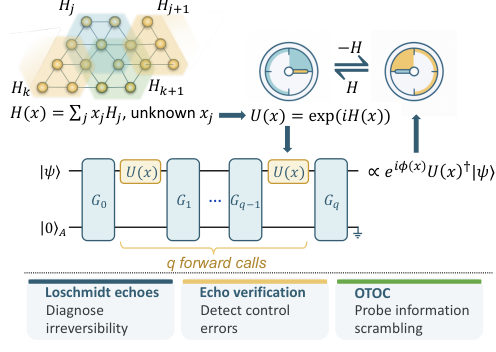
<figcaption class="paper-figure-caption"><b>Fig 1.</b> FIG. 1. Structured Hamiltonian inversion. The Hamil- tonian generators Hj and their algebraic relations are known, while their coefficients xj are hidden. A fixed quantum circuit interleaves q forward calls to U(x) = eiH(x) with parameter- independent gates and implements U(x)† up to a global phase, while restoring all auxiliary registers. The resulting inverse can be used in Loschmidt echoes, echo verification, and out- of-time-order correlator protocols.</figcaption>
</figure>
<figure class="paper-figure-card">
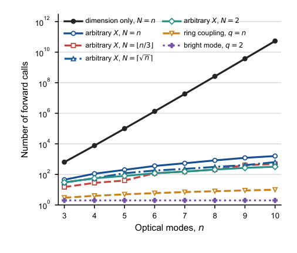
<figcaption class="paper-figure-caption"><b>Fig 2.</b> FIG. 2. Query hierarchy for a passive multimode link. The horizontal axis gives the number n of optical modes, the vertical axis is logarithmic, and N denotes the photon- number cutoff. The dimension-only curve treats the full at- most-n-photon Hilbert space as an arbitrary unitary. The four arbitrary-X curves show constructive upper bounds for the indicated values of N. For N = 2, translation-invariant couplings around a ring and the rank-one bright-mode family give the exact values q = n and q = 2, respectively. The widening separation shows how additional structure changes the scaling from exponential to polynomial, and then to linear or constant.</figcaption>
</figure>
</div>

<p><strong>Summary.</strong> This paper develops structural theorems to determine the minimum number of forward quantum calls needed to exactly invert a unitary evolution generated by a known Hamiltonian. By exploiting algebraic properties like commutativity and sector decomposition, the authors show that the required query complexity can be drastically reduced compared to treating the system as an arbitrary black box. This has direct implications for optimizing quantum sensing protocols in areas like cavity QED and quantum optics.</p>
<p><strong>Why it may be interesting.</strong> This work provides rigorous theoretical bounds on quantum control tasks (like echo verification or OTOC measurement reversal) that are crucial for understanding the resource cost of retrieving unknown system parameters from limited forward measurements.</p>
<details>
<summary>Detailed structure</summary>
<p><strong>Main problem.</strong> The core problem is determining the minimum number of forward quantum calls required to deterministically invert an unknown unitary evolution $U(x) = \exp(i\sum x_j H_j)$ when only the generators ($H_j$) are known, but the parameters ($\mathbf{x}$) are hidden.</p>
<p><strong>Main result.</strong> For commuting Hamiltonians, the inversion cost depends on additive relations among distinct eigenvalues. For general noncommuting families, the complexity is bounded by a product structure derived from inverting inequivalent active sectors.</p>
<p><strong>Method.</strong> The authors analyze the algebraic structure of the Hamiltonian generators, utilizing techniques like Wedderburn decomposition to simplify the problem into independent, invertible blocks. They derive explicit bounds based on spectral properties and sector combination rules.</p>
<p><strong>Model / system.</strong> The analysis focuses on general time-evolution $U(x) = \exp(i\sum x_j H_j)$, applied specifically to protocols involving Tavis-Cummings dynamics, collective spins (Ising/LMG), and passive multimode links in quantum optics.</p>
<p><strong>Key observables.</strong> The primary observable is the minimum query number ($q$) required for exact inversion; other key observables include residual phases ($
ho_\alpha(x)$) and the structure of joint-eigenvalue vectors ($\Lambda$).</p>
<p><strong>Important parameters / regimes.</strong> The complexity scales with system dimension ($d$), mode numbers ($M, N$), and the number of emitters/spins ($n$). Structure-dependent bounds are shown to be polynomial in these parameters.</p>
<p><strong>Assumptions / limitations.</strong> The analysis assumes knowledge of the Hamiltonian generators $\{H_j\}$ and relies on algebraic structures like commutativity or decomposability into inequivalent sectors.</p>
<p><strong>Figures summary.</strong> Figure 1 illustrates the general concept of structured Hamiltonian inversion using interleaved forward calls to implement $U(x)^\dagger$.</p>
<p><strong>Paper structure.</strong> The paper first establishes the worst-case exponential cost for arbitrary unitaries. It then develops specialized results for commuting families based on eigenvalue sums, followed by a treatment for noncommuting generators using sector decomposition and phase alignment conditions.</p>
</details>
<details>
<summary>Abstract</summary>
<p>Deterministic exact inversion of an arbitrary $d$-dimensional unitary requires {$Θ(d^2)$} coherent forward calls in the worst case. We ask how this cost changes for Hamiltonian evolution $U(x)=\exp(i\sum_j x_jH_j)$ when the generators are known but the parameters are hidden. For one-parameter families with a fixed eigenbasis, we show that additive relations among the distinct eigenvalues determine the optimal query number exactly, and we construct the corresponding inversion protocol. For general families, we prove that repeated symmetry sectors do not affect the exact query complexity and give an automatic construction for combining inverses from inequivalent active sectors. We also give a sufficient phase-alignment condition under which family-specific structure can reduce the query number. These results establish structure-dependent bounds for reversing the unknown dynamics arising in Tavis-Cummings out-of-time-order correlator protocols, collective-spin echo verification, and passive multimode links, without requiring prior knowledge or explicit estimation of the underlying coupling strengths.</p>
</details>
<p><sub><a href="#top">↑ back to top</a></sub></p>

<p><a id="paper-2607.29651"></a></p>
<h3 id="non-reciprocal-torques-guide-self-assembly-of-active-particles-into-clusters-with-controllable-function"><a href="http://arxiv.org/abs/2607.29651v1">Non-reciprocal torques guide self-assembly of active particles into clusters with controllable function</a></h3>
<p><strong>Authors:</strong> Till Welker, Yukino Fujiya, Holger Stark<br>
<strong>Type:</strong> theory · <strong>Category:</strong> statistical mechanics · <strong>PDF:</strong> <a href="https://arxiv.org/pdf/2607.29651v1">https://arxiv.org/pdf/2607.29651v1</a><br>
<strong>Analysis basis:</strong> full PDF text, analyzed in chunks
<strong>Topic relevance:</strong> <code>non-equilibrium dynamics</code> <strong>3/5</strong> · <code>driven-dissipative phase transition</code> <strong>2/5</strong> · <code>non-equilibrium universality</code> <strong>2/5</strong> · <code>Frenkel-Kontorova</code> <strong>1/5</strong> · <code>correlated / nonlocal dissipation</code> <strong>1/5</strong> · <code>methods for driven-dissipative</code> <strong>1/5</strong></p>
<div class="figure-strip-hint">↔ Scroll figures horizontally</div>
<div class="paper-figures-scroll">
<figure class="paper-figure-card">
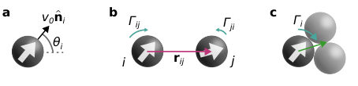
<figcaption class="paper-figure-caption"><b>Fig 1.</b> FIG. 1. Model. a) Single particle propelling with velocity v0ˆni. b) The turn-towards torque Γij turns the orientation of particle i towards its neighbour with distance vector rij. c) Particle i experiences the total torque Γi, orienting it towards the mean distance vector of its neighbours ⟨ˆrij⟩j∈Si marked by the green arrow.</figcaption>
</figure>
<figure class="paper-figure-card">
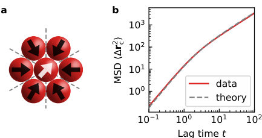
<figcaption class="paper-figure-caption"><b>Fig 2.</b> FIG. 3. Free inner particle. a) Cluster of seven particles. The turn-towards torque orients the outer particles inward. In contrast, the torque on the inner particle vanishes because of the symmetry of the environment, and it can diffuse freely. b) Centre-of-mass mean squared displacement over time obtained from simulation (red solid curve) and predicted assuming a freely diffusing inner particle and perfectly symmetric outer particles (grey dashed curve).</figcaption>
</figure>
<figure class="paper-figure-card">
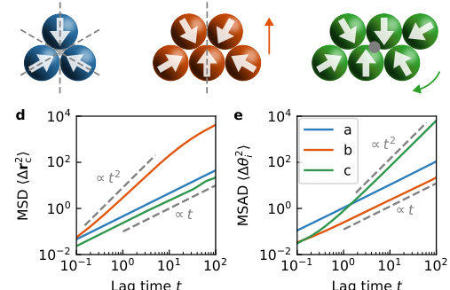
<figcaption class="paper-figure-caption"><b>Fig 3.</b> FIG. 2. Symmetry and functionality. a) Clusters with two or more symmetry axes do not perform directed translation or rotation. b) Clusters with only one symmetry axis, can translate parallel to that axis. c) Clusters with point symmetry cannot translate but rotate. d) Mean squared displacement of the centre of mass rc and, e) mean squared angular displacement of particle orientations θi for the clus- ters shown in a-c).</figcaption>
</figure>
<figure class="paper-figure-card">
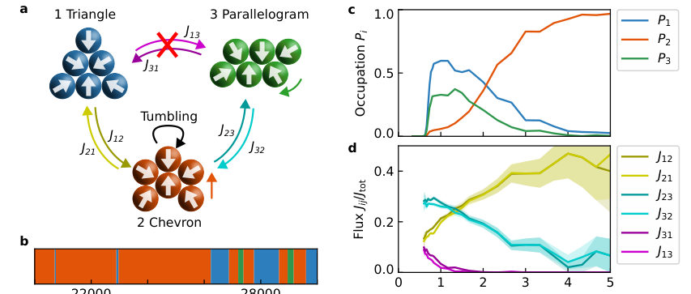
<figcaption class="paper-figure-caption"><b>Fig 4.</b> FIG. 4. Multi-stability. a) Metastable six-particle clusters: static triangle (1, blue), translating chevron (2, orange), and rotating parallelogram (3, green). The arrows show transitions between the states with fluxes Jij. The chevron can transition between different arrangements, which results in a tumbling event. b) Time series of a six-particle system switching between the three metastable states (for Γ0 = 100). c) Occupation probability Pi to observe the system in state i over torque-velocity ratio Γ0/v0, with i = 1, 2, 3 corresponding to triangle, chevron, and parallelogram, respectively. d) Fluxes between the states, Jij, also plotted vs. Γ0/v0. The fluxes are normalised with the...</figcaption>
</figure>
<figure class="paper-figure-card">
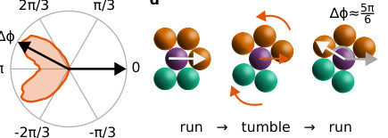
<figcaption class="paper-figure-caption"><b>Fig 5.</b> FIG. 5. Tumbling. a) The chevron cluster exhibits tumbling events in which the leader particle changes. This reorients the propulsion direction by ∆ϕ. b) Distribution pr(∆t) of run times ∆t. It can be well fitted by the exponential pr,fit(∆t) = ce−ct with tumbling rate c = 0.235. c) Probability distribution pϕ(∆ϕ) of tumbling angle ∆ϕ and d) typical tumbling event with the central particle pushing forward and two and three outer particles rotating around it.</figcaption>
</figure>
</div>

<p><strong>Summary.</strong> The research demonstrates that by introducing non-reciprocal torques to active particles, one can guide their self-assembly into structured clusters whose macroscopic function is controllable. The resulting dynamics are governed by the cluster's geometric symmetry, allowing for programmable behavior like controlled translation or rotation. Furthermore, incorporating stochastic resetting significantly enhances the speed of this functional assembly process.</p>
<p><strong>Why it may be interesting.</strong> This work provides a clear example of how engineered non-equilibrium interactions (torques) can impose complex functional constraints on self-assembled matter, drawing parallels between symmetry principles in condensed matter physics and active matter design.</p>
<details>
<summary>Detailed structure</summary>
<p><strong>Main problem.</strong> To achieve self-assembly of active particles into functional clusters with controllable function, overcoming limitations related to passive assembly and simple attractive forces.</p>
<p><strong>Main result.</strong> Non-reciprocal torques can rapidly assemble active particles into colloidal micromachines whose resulting function (static, rotating, or translating) is dictated by the cluster's symmetry and particle number.</p>
<p><strong>Method.</strong> The study uses Langevin equations of motion to simulate active particles interacting via steric repulsion and non-reciprocal turn-towards torques. Cluster dynamics are analyzed using Mean Squared Displacement (MSD) and occupation probabilities of metastable states.</p>
<p><strong>Model / system.</strong> The system consists of active colloidal particles in two dimensions, propelled by a constant velocity $v_0$ and subject to an interaction torque $\Gamma_{ij} = \Gamma_0 \hat{n}_i 	imes \hat{r}_{ij}$ when neighbors are close. The dynamics are modeled using coupled equations for position and orientation.</p>
<p><strong>Key observables.</strong> Center-of-Mass MSD/MSAD, occupation probabilities ($P_i$) of metastable cluster shapes (e.g., triangle, chevron), transition fluxes ($J_{ij}$), and run times during 'run-and-tumble' motion.</p>
<p><strong>Important parameters / regimes.</strong> Torque strength ($\Gamma_0$), propulsion velocity ($v_0$), particle number, and the ratio $\Gamma_0/v_0$.</p>
<p><strong>Assumptions / limitations.</strong> The analysis relies on overdamped motion; for small systems, cluster symmetry alone determines function; stochastic resetting is used to accelerate assembly by bypassing kinetic traps.</p>
<p><strong>Figures summary.</strong> Figures illustrate how different symmetries (e.g., point vs. single axis) constrain the resulting directed motion via MSD/MSAD plots. Other figures detail multi-stability in larger clusters and the mechanism of 'run-and-tumble' transitions.</p>
<p><strong>Paper structure.</strong> The paper establishes the physical model using non-reciprocal torques, analyzes how cluster symmetry dictates macroscopic function (static vs. dynamic), demonstrates control over multiple stable states by tuning torque strength, and finally introduces stochastic resetting to achieve fast, controlled assembly.</p>
</details>
<details>
<summary>Abstract</summary>
<p>Self-assembly of constituents determines structure formation in the microscopic world. Attractive forces can assemble active particles into colloidal machines, but they do not fix the particles' orientations, which limits control over the machine's function. We demonstrate that non-reciprocal turn-towards torques not only assemble active particles into clusters, without requiring attractive forces, but also link particle orientations to the cluster configuration. Symmetry then dictates whether the cluster is static, rotates, or translates. In small systems, the particle number uniquely determines the stable configuration and function. In larger systems, there are multiple stable configurations with distinct functions, and tuning the torque strength allows us to bias towards the desired function, such as a run-and-tumble motion. Because the interactions driving assembly can be switched on and off, the clusters self-assemble when needed. For such a "just-in-time" self-assembly to be practical, fast assembly is necessary. We show that stochastic resetting, implemented by briefly turning off propulsion and torque, significantly speeds up self-assembly by avoiding slow pathways. Together, our findings demonstrate that non-reciprocal torques can rapidly assemble active particles into colloidal micromachines with controllable function.</p>
</details>
<p><sub><a href="#top">↑ back to top</a></sub></p>

<p><a id="paper-2607.29219"></a></p>
<h3 id="fisher-orthogonal-memory-in-quantum-reservoir-computing"><a href="http://arxiv.org/abs/2607.29219v1">Fisher-Orthogonal Memory in Quantum Reservoir Computing</a></h3>
<p><strong>Authors:</strong> Ce Wang, Xingze Qiu<br>
<strong>Type:</strong> theory · <strong>Category:</strong> quantum information and computing · <strong>PDF:</strong> <a href="https://arxiv.org/pdf/2607.29219v1">https://arxiv.org/pdf/2607.29219v1</a><br>
<strong>Analysis basis:</strong> full PDF text, analyzed in chunks
<strong>Topic relevance:</strong> <code>quantum measurements</code> <strong>3/5</strong> · <code>measurement-induced transitions</code> <strong>2/5</strong> · <code>Keldysh / 2PI / non-Gaussian methods</code> <strong>1/5</strong> · <code>driven-dissipative phase transition</code> <strong>1/5</strong> · <code>entanglement &amp; information structure</code> <strong>1/5</strong> · <code>methods for driven-dissipative</code> <strong>1/5</strong></p>
<div class="figure-strip-hint">↔ Scroll figures horizontally</div>
<div class="paper-figures-scroll">
<figure class="paper-figure-card">
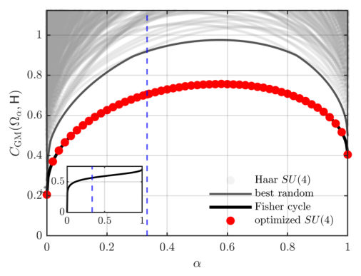
<figcaption class="paper-figure-caption"><b>Fig 1.</b> FIG. 1. Single-qubit GM cost for the weighted three-delay task. Lower values indicate superior estimation precision. The black solid curve represents the optimized Fisher-cycle family Ur; gray points denote random Haar SU(4) gates, with the gray line tracking the empirical random frontier at each α; red circles denote unrestricted local optimizations over the full SU(4) manifold. The horizontal dashed line indicates the equal-weight loss baseline (α = 1/3), and the inset displays the optimal parameter r∗within the Fisher-cycle family.</figcaption>
</figure>
<figure class="paper-figure-card">
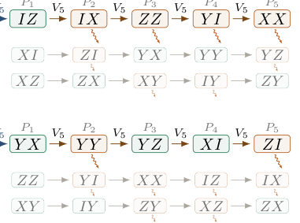
<figcaption class="paper-figure-caption"><b>Fig 2.</b> FIG. 2. Two K = 5 CROs generated by the same V5. The blue arrow indicates the entry point P1 = V5QV † 5 of the fresh perturbation tangent operator. The damping string G assigns the contractive hit pattern η. Pale rows explicitly illustrate the underlying parallel Singer partition structure, showing off- route Pauli strings transported simultaneously by the same generator, while orange boxes mark where they are damped.</figcaption>
</figure>
<figure class="paper-figure-card">
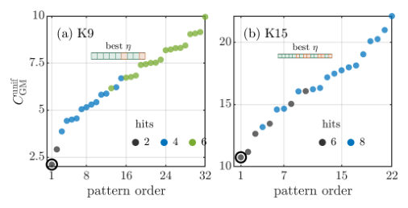
<figcaption class="paper-figure-caption"><b>Fig 3.</b> FIG. 3. Fisher-cost landscape of Clifford damping patterns. (a),(b) Optimized uniform-window cost Cunif GM for the distinct admissible hit words generated by the K = 9 Singer route C9 and the K = 15 product route C15. Points are ordered by cost and colored by the number of damping hits in one period. Open circles mark the best admissible words. The inset in each panel shows the corresponding best hit word η, with orange cells denoting ηj = 1 and green cells denoting ηj = 0.</figcaption>
</figure>
<figure class="paper-figure-card">
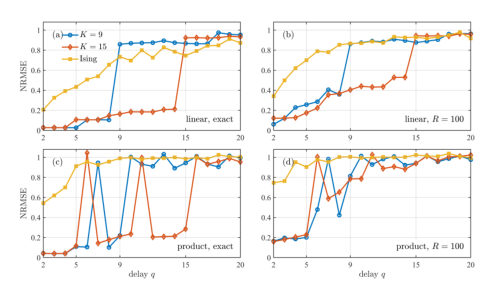
<figcaption class="paper-figure-caption"><b>Fig 4.</b> FIG. 4. Task-specific prediction performance under a sin- gle local Pauli measurement setting. (a),(b) Test NRMSE for the delayed-linear task yt = ut−q using exact expecta- tion values and finite-shot readout at R = 100, respectively. (c),(d) Corresponding results for the delayed-product task yt = ut−qut−1. For each task, delay, and readout condition, the Clifford results are optimized over the admissible (Q, G) pairs, the fading parameter r, and the local Pauli setting. The Ising results are optimized over the sampled random reservoirs and local Pauli settings.</figcaption>
</figure>
</div>

<p><strong>Summary.</strong> This work develops a rigorous framework to analyze the memory capacity of Quantum Reservoir Computing by quantifying measurement limitations using the quantum Fisher information matrix. By enforcing 'Fisher-orthogonality' through structured Clifford routing, the authors demonstrate an analytically controlled method to build reservoirs that maintain sharp memory fidelity for complex temporal tasks.</p>
<p><strong>Why it may be interesting.</strong> The explicit connection between algebraic structures (Clifford group, Pauli algebra) and fundamental quantum information metrics (Fisher information) provides a powerful design principle for building robust quantum machine learning hardware.</p>
<details>
<summary>Detailed structure</summary>
<p><strong>Main problem.</strong> The performance limit of Quantum Reservoir Computing (QRC) when extracting temporal memory from finite quantum measurements must be quantified.</p>
<p><strong>Main result.</strong> Fisher-orthogonal memory, achieved by designing reservoir dynamics using Clifford routing orbits, allows for analytically controlled and measurement-efficient reconstruction of past inputs in both linear and nonlinear tasks.</p>
<p><strong>Method.</strong> The authors formulate the problem as a local multiparameter estimation task, utilizing the delay-space quantum Fisher information matrix (QFIM) to enforce orthogonality conditions on memory traces.</p>
<p><strong>Model / system.</strong> The system is an N-qubit reservoir processing temporal data via driven many-body dynamics. The evolution is engineered using Clifford routing orbits and Pauli string algebra to ensure specific structural properties in the QFIM.</p>
<p><strong>Key observables.</strong> Delay-space quantum Fisher information matrix (QFIM), Normalized Root-Mean-Square Error (NRMSE) for linear/product delay reconstruction, and mixed tangent $\Gamma_{kj}$ for second-order response.</p>
<p><strong>Important parameters / regimes.</strong> The degree of memory identifiability is controlled by parameters like $r$ in the single-qubit case; performance depends on the number of shots ($N_{	ext{shot}}$) and the structure of the routing generators.</p>
<p><strong>Assumptions / limitations.</strong> The analysis relies on linear response approximations ($\delta
ho_f$) for memory characterization, though extensions cover second-order (nonlinear) responses.</p>
<p><strong>Figures summary.</strong> Figure 1 compares the optimized 'Fisher-cycle' curve against random Haar gates in the single-qubit GM cost landscape, demonstrating optimality.</p>
<p><strong>Paper structure.</strong> The paper progresses from establishing the QFIM as the diagnostic tool, deriving optimal designs for the single-qubit case using the Gill--Massar bound, scaling this to multi-qubit systems via Clifford routing orbits, and finally extending the analysis to second-order (nonlinear) response channels.</p>
</details>
<details>
<summary>Abstract</summary>
<p>Quantum reservoir computing processes temporal information through driven many-body dynamics, but its performance is ultimately limited by how accurately past inputs can be extracted from finite measurements. Here we formulate this limitation as a local multiparameter estimation problem and introduce a delay-space quantum Fisher information matrix to quantify the distinguishability of memory traces. This perspective identifies Fisher-orthogonal memory as a measurement-efficient design principle: different delays should perturb the reservoir state along statistically independent directions. We first analyze the single-qubit limit using the Gill--Massar bound, revealing an optimal write-store-routing trade-off. Guided by this structure, we construct solvable multi-qubit reservoirs based on Clifford routing orbits and Singer-cycle Pauli algebra. The resulting dynamics yield diagonal, analytically programmable Fisher memory matrices with controlled dissipation profiles. Under finite-shot local Pauli readout, these reservoirs retain sharp memory windows and substantially improve over optimized random Ising reservoirs for both linear delay reconstruction and nonlinear product-delay tasks. The nonlinear advantage is traced to second-order response channels that inherit the same Pauli-routing structure. Our results provide an analytically controlled route toward measurement-efficient quantum reservoir computing.</p>
</details>
<p><sub><a href="#top">↑ back to top</a></sub></p>

<p><a id="paper-2607.29342"></a></p>
<h3 id="information-limits-of-photonic-lantern-wavefront-sensing-a-fisher-and-quantum-fisher-information-framework-and-its-relation-to-fourier-filtering-sensitivity-limits"><a href="http://arxiv.org/abs/2607.29342v1">Information limits of photonic lantern wavefront sensing: a Fisher- and quantum-Fisher-information framework and its relation to Fourier-filtering sensitivity limits</a></h3>
<p><strong>Authors:</strong> Kalaga Madhav<br>
<strong>Type:</strong> theory · <strong>Category:</strong> other · <strong>PDF:</strong> <a href="https://arxiv.org/pdf/2607.29342v1">https://arxiv.org/pdf/2607.29342v1</a><br>
<strong>Analysis basis:</strong> full PDF text, analyzed in chunks
<strong>Topic relevance:</strong> <code>quantum measurements</code> <strong>3/5</strong> · <code>entanglement &amp; information structure</code> <strong>2/5</strong> · <code>measurement-induced transitions</code> <strong>2/5</strong> · <code>Keldysh / 2PI / non-Gaussian methods</code> <strong>1/5</strong> · <code>interference shaping light</code> <strong>1/5</strong></p>
<div class="figure-strip-hint">↔ Scroll figures horizontally</div>
<div class="paper-figures-scroll">
<figure class="paper-figure-card">
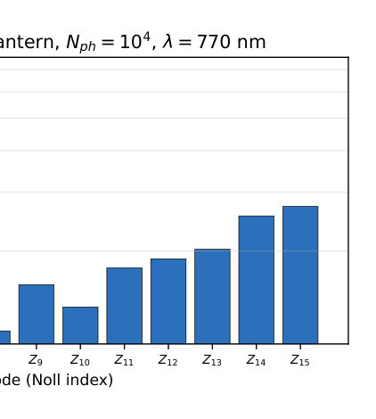
<figcaption class="paper-figure-caption"><b>Fig 1.</b> Figure 1. Per-mode (averaged) CRLB for a representative 19-port focal-plane lantern (Nph = 104). Rotationally-odd modes are sensed near the information limit; for a symmetric projector the even modes are intrinsically weaker (Sect. 6).</figcaption>
</figure>
<figure class="paper-figure-card">
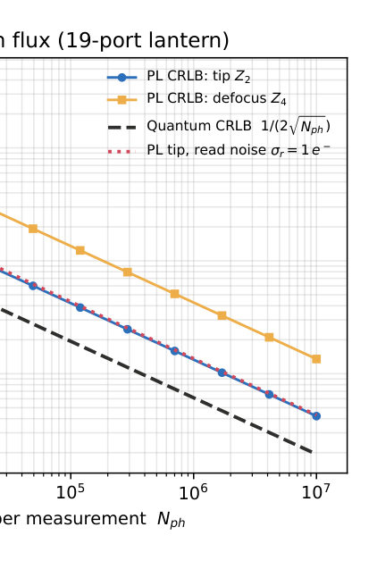
<figcaption class="paper-figure-caption"><b>Fig 2.</b> Figure 2. CRLB versus detected photons. The photon-limited bound follows N −1/2 ph (Eq. 9) and sits a fixed factor above the quantum bound Eq. (12); read noise dominates at low flux, steepening the slope toward −1.</figcaption>
</figure>
<figure class="paper-figure-card">
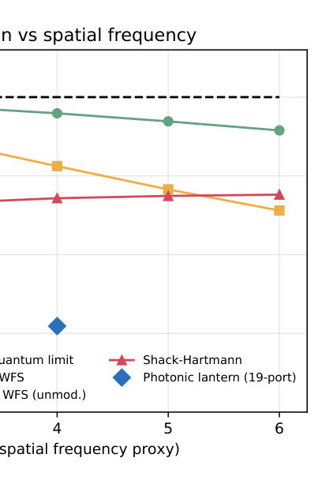
<figcaption class="paper-figure-caption"><b>Fig 3.</b> Figure 3. Dimensionless sensitivity βi (Eq. 10) per mode, referenced to the quantum ceiling β = 2 (Eq. 12). This is the common scale on which the lantern, pyramid, ZWFS and PIAA-ZWFS [21, 22] can be compared.</figcaption>
</figure>
<figure class="paper-figure-card">
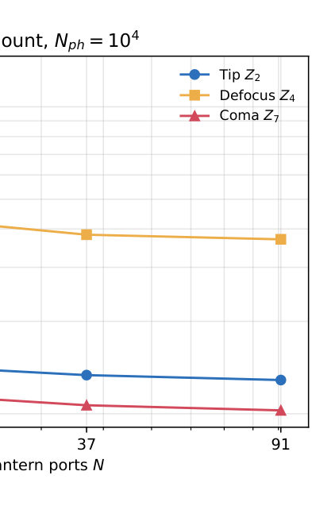
<figcaption class="paper-figure-caption"><b>Fig 4.</b> Figure 4. Low-order CRLB versus port count at Nph = 104. Sensitivity improves sharply from 7 to 19 ports and saturates thereafter for low-order modes – the per-frame capacity ceiling Meff ≤N −1 of Sect. 3.5.</figcaption>
</figure>
</div>

<p><strong>Summary.</strong> This paper establishes a comprehensive, theory-driven framework to determine the ultimate precision limits of wavefront sensing using a photonic lantern. By calculating both classical (FIM) and quantum (QFI) bounds, it shows that the sensor's performance scales predictably with photon number and is fundamentally limited by a universal quantum ceiling ($eta=2$). This provides a powerful, device-agnostic tool for comparing various optical measurement techniques.</p>
<p><strong>Why it may be interesting.</strong> It provides rigorous information-theoretic tools ($  ext{FIM},   ext{QFI}$) to benchmark the performance of complex optical sensors like the photonic lantern against fundamental quantum limits, which is highly relevant for advanced quantum optics and sensing.</p>
<details>
<summary>Detailed structure</summary>
<p><strong>Main problem.</strong> To determine the fundamental, estimator-independent information limits for wavefront sensing using a photonic lantern, moving beyond reliance on specific reconstruction algorithms.</p>
<p><strong>Main result.</strong> The derived Cramér–Rao Lower Bound (CRLB) scales as $N_{ph}^{-1/2}$ and is bounded by an absolute quantum limit ($eta=2$), which is jointly saturable for all low-order modes simultaneously.</p>
<p><strong>Method.</strong> The authors developed a framework using the Fisher Information Matrix (FIM) and Quantum Fisher Information (QFI) to quantify measurement precision, comparing classical bounds against fundamental quantum limits.</p>
<p><strong>Model / system.</strong> The system analyzed is the Photonic Lantern (PL), an all-photonic wavefront sensor that maps wavefront aberrations ($\mathbf{a}$) onto $N$ measurable output intensities ($I_k$).</p>
<p><strong>Key observables.</strong> Per-mode CRLB ($\sigma_{a_i}^2$), dimensionless sensitivity metric $eta$, and the Quantum Fisher Information matrix elements.</p>
<p><strong>Important parameters / regimes.</strong> Photon number ($N_{ph}$), number of ports ($N$), quantum ceiling ($eta=2$), and aberration coefficients ($\mathbf{a}$).</p>
<p><strong>Assumptions / limitations.</strong> The measurement process is modeled as a deterministic, nonlinear map from aberration coefficients to output intensities; the analysis distinguishes between single-frame CRLB and ensemble averages.</p>
<p><strong>Figures summary.</strong> Figures compare the per-mode averaged CRLB across different sensor types (lantern vs. pyramid/ZWFS) against the quantum limit ($eta=2$), showing scaling laws with photon number and port count.</p>
<p><strong>Paper structure.</strong> The paper develops the FIM/CRLB theory, benchmarks it against QFI to establish the quantum ceiling, compares results to existing literature (Chambouleyron et al., Haffert et al.), and concludes by providing a unified, device-agnostic sensitivity metric $eta$.</p>
</details>
<details>
<summary>Abstract</summary>
<p>The photonic lantern is an all-photonic wavefront sensor native to single-mode-fibre-fed instruments, but its performance is almost always quoted through a specific reconstruction algorithm, obscuring how much wavefront information the device itself encodes. We develop, from first principles, the Fisher-information and Cramer-Rao theory of the photonic-lantern wavefront sensor, benchmark it against the quantum Cramer-Rao bound via an explicit multi-parameter quantum-Fisher-information calculation, and relate it to two established frameworks: the Fourier-filtering noise-propagation model of Chambouleyron et al (2023) and the classical/quantum sensitivity limit of Haffert et al (2023). Treating the lantern as a deterministic map from aberration coefficients to N output intensities, we derive the Poisson and read-noise Fisher information matrices (FIM), the per-mode CRLB, the per- photon Fisher-Rao geometry on the intensity simplex, and a flux- and estimator-independent sensitivity metric beta with quantum ceiling beta = 2. The lantern CRLB scales as N_ph^(-1/2) and is bounded, mode by mode, by the quantum limit of 1/2 rad rms per photon. That multi-parameter bound is jointly saturable: the phase generators are real and commuting, so the mean Uhlmann curvature vanishes and wavefront sensing carries no quantum incompatibility between simultaneously estimated modes, extending Haffert et al's single-mode ceiling to all low-order modes at once. We further show that the photon-noise sensitivity s_gamma of Chambouleyron et al is exactly the diagonal of our per- photon FIM, whereas the CRLB uses the diagonal of its inverse; the two coincide only for a diagonal FIM, so s_gamma is optimistic for a mode-mixing lantern. The framework is device-agnostic: it returns estimator-independent sensitivities comparable on a common beta &lt;= 2 scale with pyramid, Zernike and PIAA-ZWFS sensors.</p>
</details>
<p><sub><a href="#top">↑ back to top</a></sub></p>

<p><a id="paper-2607.28765"></a></p>
<h3 id="deriving-the-second-law-of-thermodynamics-and-exploring-its-boundaries"><a href="http://arxiv.org/abs/2607.28765v1">Deriving the second law of thermodynamics and exploring its boundaries</a></h3>
<p><strong>Authors:</strong> Yu Qiao<br>
<strong>Type:</strong> theory · <strong>Category:</strong> statistical mechanics · <strong>PDF:</strong> <a href="https://arxiv.org/pdf/2607.28765v1">https://arxiv.org/pdf/2607.28765v1</a><br>
<strong>Analysis basis:</strong> full PDF text, analyzed in chunks
<strong>Topic relevance:</strong> <code>non-equilibrium dynamics</code> <strong>3/5</strong> · <code>non-equilibrium universality</code> <strong>2/5</strong> · <code>Keldysh / 2PI / non-Gaussian methods</code> <strong>1/5</strong> · <code>driven-dissipative phase transition</code> <strong>1/5</strong> · <code>methods for driven-dissipative</code> <strong>1/5</strong></p>
<div class="figure-strip-hint">↔ Scroll figures horizontally</div>
<div class="paper-figures-scroll">
<figure class="paper-figure-card">
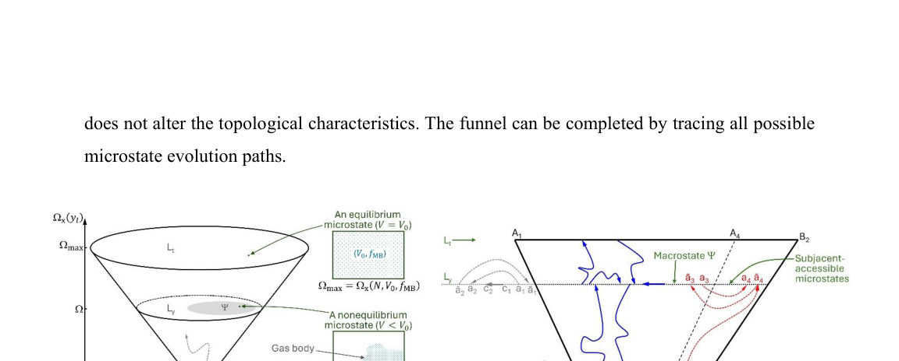
<figcaption class="paper-figure-caption"><b>Fig 1.</b> Figure 1. (a) Schematic of the funnel-shaped phase space of an isolated system. Each horizontal “layer” (hyperplane) represents the region corresponding to a certain value of , i.e., the subset of the microstates that satisfy x(𝑦𝑙) = . The layer size represents the number of microstates in the subset. From bottom to top,  increases. The grey circle in hyperplane Ly indicates a macrostate (). The grey dotted curve depicts a possible microstate evolution path, starting from the bottom of the phase space (L1). The insets illustrate two representative microstates of a classical ideal gas: the upper inset shows an equilibrium state, in which the gas fills the container; the lower inset...</figcaption>
</figure>
<figure class="paper-figure-card">
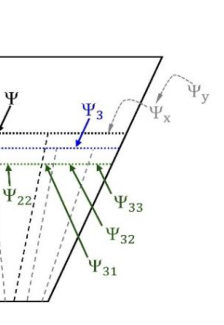
<figcaption class="paper-figure-caption"><b>Fig 2.</b> Figure 2. Macrostate evolution in the simplified phase-space subspace of .</figcaption>
</figure>
<figure class="paper-figure-card">
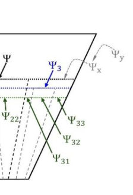
<figcaption class="paper-figure-caption"><b>Fig 3.</b> Figure 2 shows the funnel-shaped phase-space subspace of a macrostate (). Its structure</figcaption>
</figure>
<figure class="paper-figure-card">
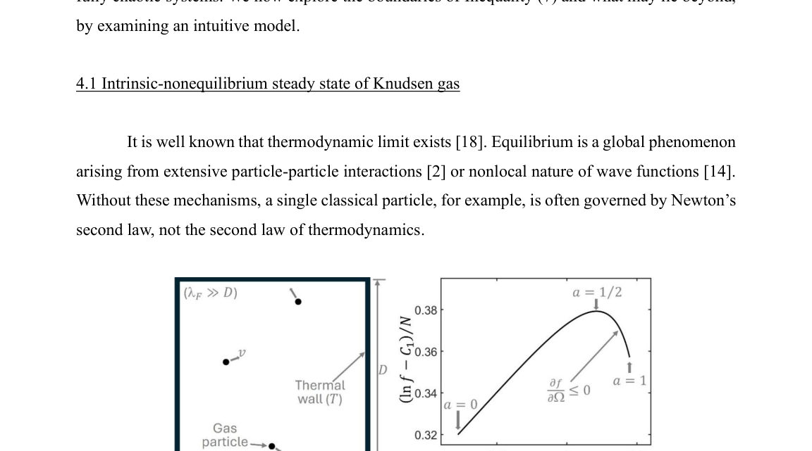
<figcaption class="paper-figure-caption"><b>Fig 4.</b> Figure 3. (a) Schematic of a Knudsen gas [12] (see Appendix 1 for more details). The particle mean free path 𝜆F is much larger than the characteristic size of the gas container 𝐷. The system is immersed in a thermal reservoir, using thermal-wall boundary condition. Because particle-particle interactions are sparse, fast particles tend to collide rapidly with the container walls and release heat to the environment, and slow particles tend to stay long in the interior. As a result, the effective gas-phase kinetic temperature (𝑇k) is lower than the thermal-wall temperature (𝑇 ), i.e., the system cannot relax to thermal equilibrium. The probability of finding a particle of kinetic energy 𝐾 is...</figcaption>
</figure>
<figure class="paper-figure-card">
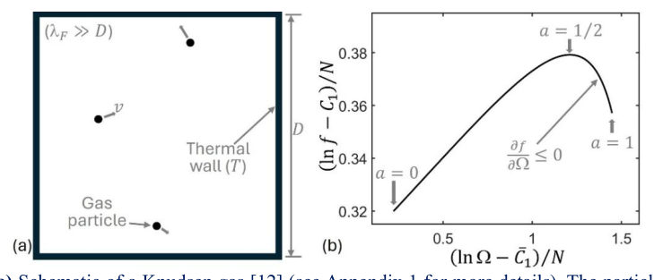
<figcaption class="paper-figure-caption"><b>Fig 5.</b> Figure 3(a) depicts a Knudsen gas of 𝑁 particles (hard spheres). It is immersed in a thermal</figcaption>
</figure>
</div>

<p><strong>Summary.</strong> The paper proposes a generalized criterion ($\partial f / \partial \Omega > 0$) derived from phase-space continuity equations to prove the second law of thermodynamics. It demonstrates that this condition is necessary and sufficient for chaotic systems but fails in locally nonchaotic or sparse collision regimes, where entropy can decrease spontaneously without violating energy conservation.</p>
<p><strong>Why it may be interesting.</strong> This work provides a highly general statistical mechanical framework for entropy increase that moves beyond specific dynamical assumptions (like molecular chaos), offering insights into the fundamental prerequisites for the second law in complex, non-equilibrium quantum systems.</p>
<details>
<summary>Detailed structure</summary>
<p><strong>Main problem.</strong> The paper addresses the fundamental challenge of deriving a general proof for the second law of thermodynamics ($\dot{S} \ge 0$) applicable across diverse physical regimes, including quantum and highly non-equilibrium systems.</p>
<p><strong>Main result.</strong> The second law emerges naturally if the macrostate probability $f$ increases monotonically with the number of microstates $\Omega$ ($\partial f / \partial \Omega > 0$), suggesting this condition is more general than relying on assumptions like molecular chaos or equal a priori probabilities.</p>
<p><strong>Method.</strong> The derivation utilizes the continuity equation for the macrostate-level probability $f$ in phase space, contrasting it with traditional approaches like the H-theorem.</p>
<p><strong>Model / system.</strong> The analysis is conducted using idealized isolated Hamiltonian systems modeled in a funnel-shaped phase space. Specific examples include Knudsen gases in confined geometries to test breakdown regimes.</p>
<p><strong>Key observables.</strong> Entropy ($S = k_B \ln \Omega$), macrostate probability $f$, and the rate of change $\dot{\Omega}$ derived from the continuity equation.</p>
<p><strong>Important parameters / regimes.</strong> The condition $\partial f / \partial \Omega > 0$ is crucial; deviations occur in locally nonchaotic systems or sparse collision regimes.</p>
<p><strong>Assumptions / limitations.</strong> The core derivation assumes $\partial f / \partial \Omega > 0$. The paper also contrasts this with the assumption of equal a priori equilibrium probabilities ($\mathcal{B}$), showing it is sufficient but not necessary.</p>
<p><strong>Figures summary.</strong> Figures illustrate the funnel-shaped phase space evolution, the dependence of entropy on $\Omega$, and specific examples (like cell wall insertion or low-collision regimes) where entropy decrease can occur without external driving forces.</p>
<p><strong>Paper structure.</strong> The paper progresses by first establishing the general condition ($\partial f / \partial \Omega > 0$) from the continuity equation, contrasting it with classical limitations. It then explores violations in nonchaotic/low-collision systems and finally compares this generalized requirement against established assumptions like $\mathcal{B}$.</p>
</details>
<details>
<summary>Abstract</summary>
<p>The second law of thermodynamics still lacks a general proof applicable to both classical and quantum systems across broad ranges of time scales, interactions, and degrees of nonequilibrium. In this paper, we show that when the macrostate-level probability $f$ of an isolated system increases monotonically with the number of possible microstates $Ω$ (i.e., $\partial f/\partial Ω> 0$), the second law emerges naturally from the continuity equation of $f$ in phase space; a special case of $\partial f/\partial Ω> 0$ is Boltzmann's assumption of equal a priori equilibrium probabilities. Based on this finding, the second law can be readily derived for fully chaotic systems. The derivation does not rely on dynamical details, highlighting the statistical nature of entropy increase. In contrast, for a locally nonchaotic system, the positive correlation between $f$ and $Ω$ may break down (i.e., $\partial f/\partial Ω\leq 0$). Consequently, the conventional framework of thermodynamics does not apply, and entropy can decrease spontaneously without any energetic penalty.</p>
</details>
<p><sub><a href="#top">↑ back to top</a></sub></p>

<p><a id="paper-2607.29469"></a></p>
<h3 id="phase-sensitivity-of-spectrally-multimode-su11-interferometers-with-waveguide-based-optical-parametric-amplifier"><a href="http://arxiv.org/abs/2607.29469v1">Phase Sensitivity of Spectrally Multimode SU(1,1) Interferometers with Waveguide based Optical Parametric Amplifier</a></h3>
<p><strong>Authors:</strong> Sonu Jana, Swagatam Bag, Fabien Bretenaker, Nadia Belabas, Syamsundar De<br>
<strong>Type:</strong> theory · <strong>Category:</strong> other · <strong>PDF:</strong> <a href="https://arxiv.org/pdf/2607.29469v1">https://arxiv.org/pdf/2607.29469v1</a><br>
<strong>Analysis basis:</strong> full PDF text, analyzed in chunks
<strong>Topic relevance:</strong> <code>interference shaping light</code> <strong>3/5</strong> · <code>quantum measurements</code> <strong>2/5</strong> · <code>Keldysh / 2PI / non-Gaussian methods</code> <strong>1/5</strong> · <code>driven-dissipative phase transition</code> <strong>1/5</strong> · <code>methods for driven-dissipative</code> <strong>1/5</strong></p>
<div class="figure-strip-hint">↔ Scroll figures horizontally</div>
<div class="paper-figures-scroll">
<figure class="paper-figure-card">
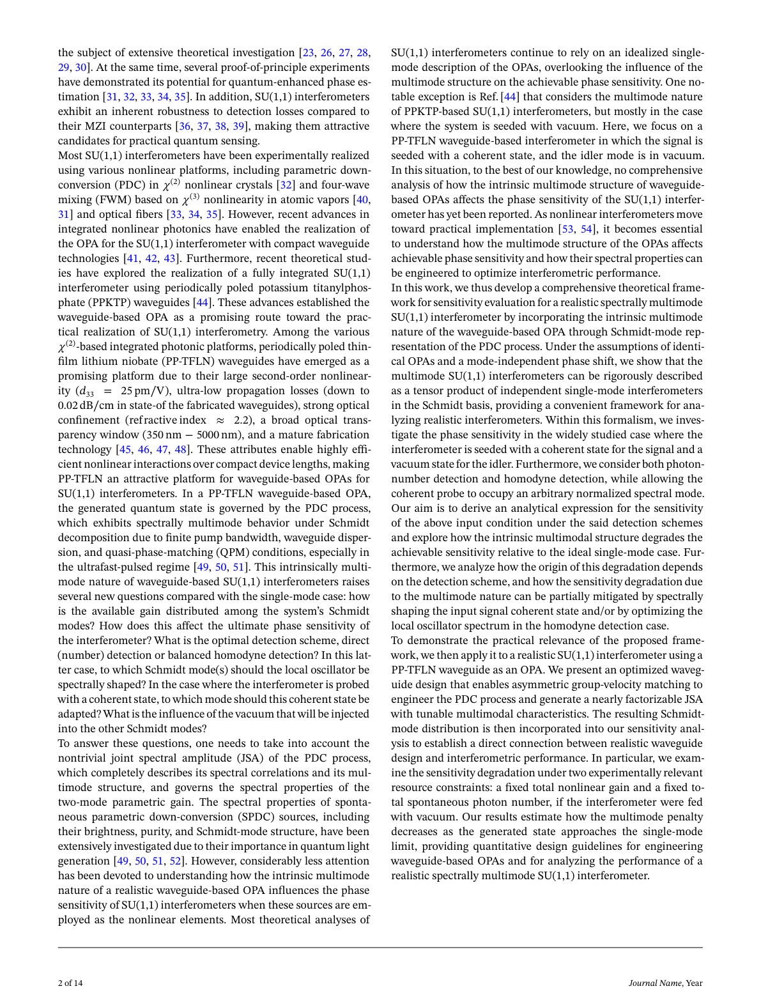
<figcaption class="paper-figure-caption"><b>Fig 1.</b> Low-resolution page preview, page 2</figcaption>
</figure>
<figure class="paper-figure-card">
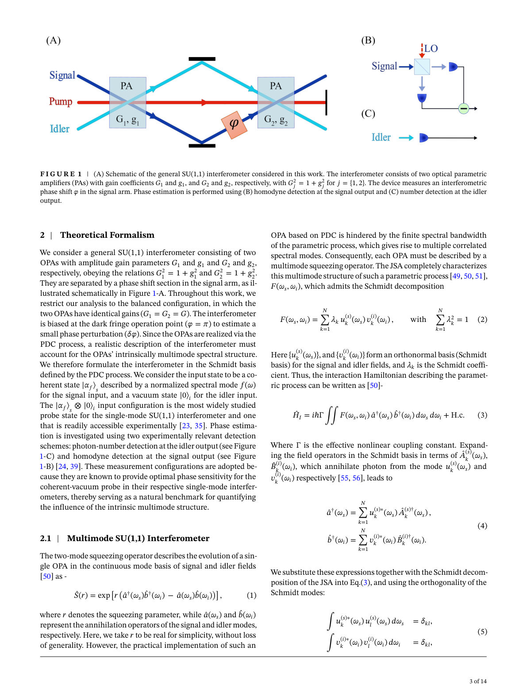
<figcaption class="paper-figure-caption"><b>Fig 2.</b> Low-resolution page preview, page 3</figcaption>
</figure>
<figure class="paper-figure-card">
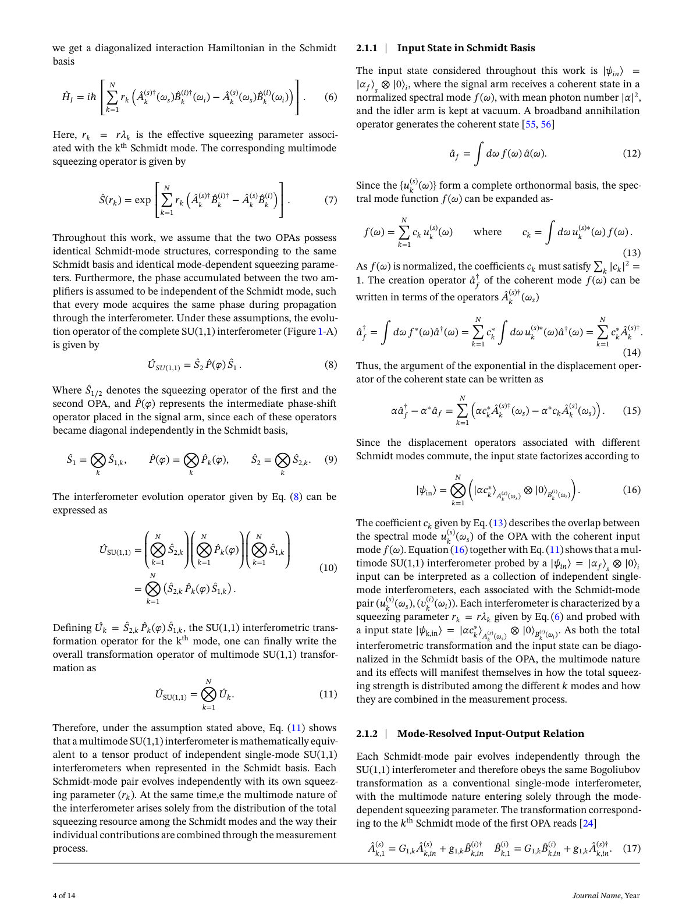
<figcaption class="paper-figure-caption"><b>Fig 3.</b> Low-resolution page preview, page 4</figcaption>
</figure>
<figure class="paper-figure-card">
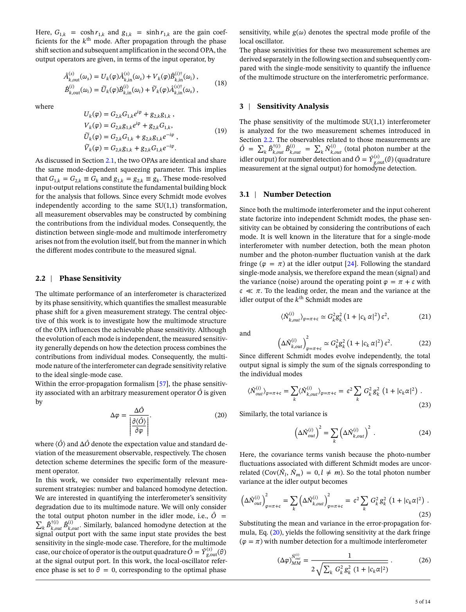
<figcaption class="paper-figure-caption"><b>Fig 4.</b> Low-resolution page preview, page 5</figcaption>
</figure>
<figure class="paper-figure-card">
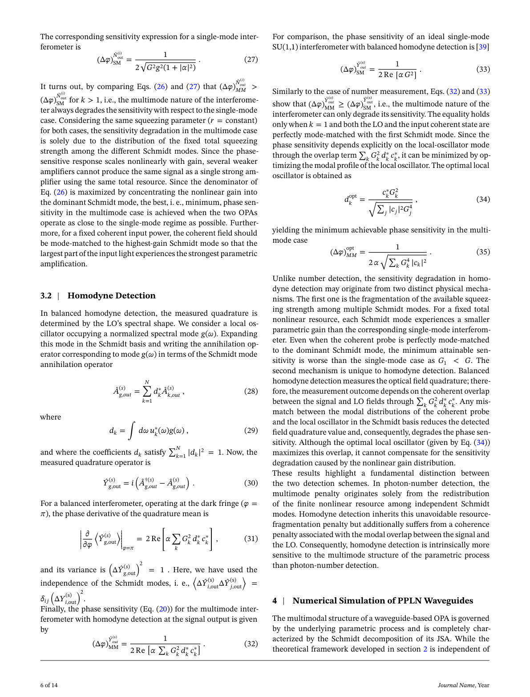
<figcaption class="paper-figure-caption"><b>Fig 5.</b> Low-resolution page preview, page 6</figcaption>
</figure>
</div>

<p><strong>Summary.</strong> This paper develops a comprehensive framework to assess the phase sensitivity of multimode $   ext{SU}(1,1)$ interferometers built using waveguide-based OPAs. By analyzing the system in the Schmidt basis, the authors show that while multi-mode operation introduces spectral penalties, these can be substantially reduced by optimizing both the input signal and the local oscillator spectrum, particularly when using homodyne detection.</p>
<p><strong>Why it may be interesting.</strong> This work provides a rigorous theoretical tool to analyze quantum sensing limits in realistic, spectrally complex photonic platforms like integrated waveguides, bridging fundamental quantum optics theory with practical device engineering.</p>
<details>
<summary>Detailed structure</summary>
<p><strong>Main problem.</strong> The study evaluates how the intrinsic spectral multimode nature of waveguide-based Optical Parametric Amplifiers (OPAs) affects the phase sensitivity achievable in an $  ext{SU}(1,1)$ interferometer.</p>
<p><strong>Main result.</strong> Phase sensitivity depends strongly on the measurement scheme; while number detection suffers from resource redistribution penalties, homodyne detection allows for significant mitigation of degradation by optimizing the local oscillator spectrum and input signal state.</p>
<p><strong>Method.</strong> The analysis employs a theoretical framework utilizing the Schmidt basis decomposition of the Joint Spectral Amplitude (JSA) to model the multimode evolution as a parallel collection of independent single-mode interferometers.</p>
<p><strong>Model / system.</strong> The system is an $  ext{SU}(1,1)$ interferometer realized using periodically polled thin-film lithium niobate ($    ext{PP-TFLN}$) waveguides acting as OPAs. The model incorporates the full multimode spectral structure derived from the PDC process.</p>
<p><strong>Key observables.</strong> Phase sensitivity ($\Delta\varphi$); Sensitivity degradation penalty ratio ($\eta(r)$); Joint Spectral Amplitude (JSA) and its Schmidt coefficients.</p>
<p><strong>Important parameters / regimes.</strong> Detection scheme (number vs. homodyne); Input signal coherent state spectrum; Local oscillator spectrum; Total squeezing strength ($r$).</p>
<p><strong>Assumptions / limitations.</strong> The analysis assumes identical OPAs and mode-independent phase shifts for simplification in the Schmidt basis representation.</p>
<p><strong>Figures summary.</strong> Figures illustrate the schematic of the interferometer, show how matching the probe spectrum to the dominant Schmidt mode mitigates degradation, and compare sensitivity ratios ($\eta(r)$) under different resource constraints.</p>
<p><strong>Paper structure.</strong> The paper develops a theoretical framework by mapping the multimode $  ext{SU}(1,1)$ evolution onto independent single-mode transformations in the Schmidt basis. It then calculates phase sensitivity using error propagation for both number and homodyne detection, culminating in optimization strategies for input/LO spectra.</p>
</details>
<details>
<summary>Abstract</summary>
<p>We present a comprehensive framework for evaluating the phase sensitivity of spectrally multimode SU(1,1) interferometers probed with a coherent-vacuum input, under both number and homodyne detections. The optical parametric amplifiers (OPAs) are simulated using a periodically polled thin-film lithium niobate waveguide. The theoretical model incorporates the intrinsic multimode spectral nature of waveguide-based OPAs. Under the assumptions of identical OPAs and Schmidt-mode-independent phase shifts, we have shown that the multimode SU(1,1) interferometer is equivalent to a collection of independent single-mode interferometers in the Schmidt basis that operate in parallel, each associated with a Schmidt mode of the parametric process. We further present an optimized waveguide design based on asymmetric group-velocity matching to realize a practical OPA with nearly factorizable joint spectral amplitude (JSA). The Schmidt coefficients extracted from the numerically simulated JSA are incorporated into the theoretical model to evaluate the phase sensitivity. The results show that the sensitivity under a multimode condition depends strongly on the measurement scheme. For number detection, the degradation in sensitivity arises from the redistribution of the available nonlinear resource among the Schmidt modes, whereas homodyne detection exhibits an additional coherence penalty that can be substantially reduced by optimally shaping the local oscillator. Moreover, we show that the performance degradation can be to a large extent mitigated by optimizing the spectrum of the injected signal coherent state and, in the case of homodyne detection, the spectrum of the local oscillator. Altogether, this work provides a unified theoretical and numerical framework for analyzing and optimizing realistic multimode SU(1,1) interferometers with waveguide-based OPAs for quantum-enhanced sensing applications.</p>
</details>
<p><sub><a href="#top">↑ back to top</a></sub></p>

<p><a id="paper-2607.29396"></a></p>
<h3 id="revisiting-the-equation-of-motion-method-a-universal-framework-for-correlated-quantum-systems"><a href="http://arxiv.org/abs/2607.29396v1">Revisiting the Equation-of-Motion Method: A Universal Framework for Correlated Quantum Systems</a></h3>
<p><strong>Authors:</strong> Andrea Porro<br>
<strong>Type:</strong> theory · <strong>Category:</strong> other · <strong>PDF:</strong> <a href="https://arxiv.org/pdf/2607.29396v1">https://arxiv.org/pdf/2607.29396v1</a><br>
<strong>Analysis basis:</strong> full PDF text, analyzed in chunks
<strong>Topic relevance:</strong> <code>Keldysh / 2PI / non-Gaussian methods</code> <strong>3/5</strong> · <code>analog quantum simulation</code> <strong>1/5</strong> · <code>correlated / nonlocal dissipation</code> <strong>1/5</strong> · <code>driven-dissipative phase transition</code> <strong>1/5</strong> · <code>methods for driven-dissipative</code> <strong>1/5</strong> · <code>non-equilibrium dynamics</code> <strong>1/5</strong></p>
<div class="figure-strip-hint">↔ Scroll figures horizontally</div>
<div class="paper-figures-scroll">
<figure class="paper-figure-card">
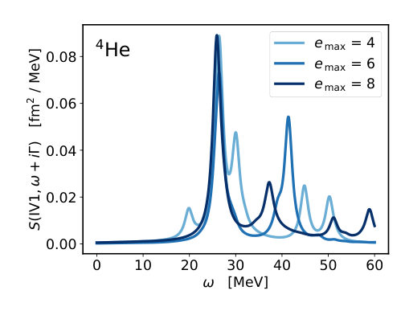
<figcaption class="paper-figure-caption"><b>Fig 1.</b> FIG. 1. Isovector dipole response in 4He obtained employing the EOM technique based on an IMSRG(2) reference state and a full one-body operator basis for the excited states. Cal- culations were performed employing the NNLOopt [76] inter- action with a harmonic oscillator frequency of ℏω = 16 MeV. Different model space sizes are compared.</figcaption>
</figure>
<figure class="paper-figure-card">
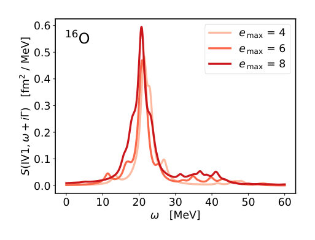
<figcaption class="paper-figure-caption"><b>Fig 2.</b> FIG. 2. Isovector dipole response in 16O obtained employing the EOM technique based on an IMSRG(2) reference state and a full one-body operator basis for the excited states. Cal- culations were performed employing the N3LO Texas [78] inter- action with a harmonic oscillator frequency of ℏω = 16 MeV. Different model space sizes are compared.</figcaption>
</figure>
<figure class="paper-figure-card">
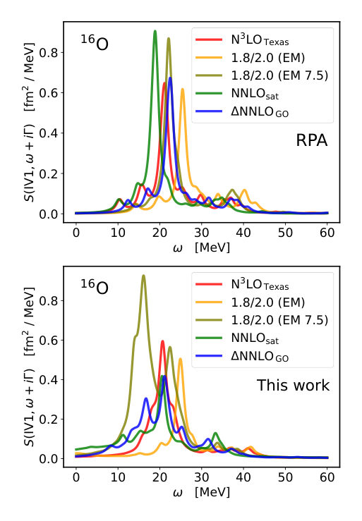
<figcaption class="paper-figure-caption"><b>Fig 3.</b> FIG. 3. Isovector dipole response in 16O from RPA calcu- lations (upper panel) and the EOM technique based on an IMSRG(2) reference state and a full one-body operator basis for the excited states (bottom panel). Calculations are per- formed at emax= 8 and ℏω = 16 MeV.</figcaption>
</figure>
<figure class="paper-figure-card">
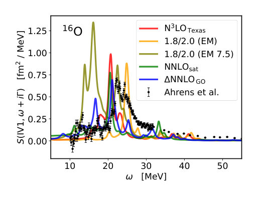
<figcaption class="paper-figure-caption"><b>Fig 4.</b> FIG. 4. Same as the bottom panel of Fig. 3 but for Γ = 0.5 MeV. Experimental data are taken from Ref. [82].</figcaption>
</figure>
<figure class="paper-figure-card">
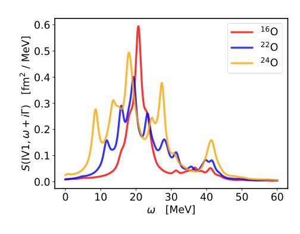
<figcaption class="paper-figure-caption"><b>Fig 5.</b> FIG. 5. Isovector dipole response in closed-shell oxygen iso- topes obtained employing the EOM technique based on an IMSRG(2) reference state and a full one-body operator basis for the excited states. Calculations were performed employ- ing the N3LO Texas [78] interaction with a harmonic oscillator frequency of ℏω = 16 MeV at emax= 8.</figcaption>
</figure>
</div>

<p><strong>Summary.</strong> This paper introduces an advanced Equation-of-Motion (EOM) formalism designed to treat collective excitations in strongly correlated quantum systems, specifically atomic nuclei. By extending the method to use correlated ground states rather than simple mean-field approximations, it provides a unified and powerful tool for calculating excitation spectra beyond traditional limits. This advancement is significant for any field requiring accurate dynamics of complex many-body wavefunctions.</p>
<p><strong>Why it may be interesting.</strong> While focused on nuclear physics, the core mathematical machinery—the generalized EOM framework for excited states built upon correlated reference states—is highly relevant to open quantum systems dynamics and time-dependent variational approaches in AMO physics.</p>
<details>
<summary>Detailed structure</summary>
<p><strong>Main problem.</strong> The central problem is developing a universal, consistent framework for describing excited states and collective excitations in complex, correlated quantum many-body systems.</p>
<p><strong>Main result.</strong> The authors present an extended Equation-of-Motion (EOM) formalism that successfully incorporates ground-state correlations by operating on correlated reference states, moving beyond traditional mean-field approximations.</p>
<p><strong>Method.</strong> The method involves deriving the EOM equations from the Time-Dependent Variational Principle and solving the resulting generalized eigenvalue problem, which yields normal modes of the energy function.</p>
<p><strong>Model / system.</strong> The theory is applied to atomic nuclei using chiral nuclear Hamiltonians in an ab initio context. The formalism itself is general for any correlated quantum system described by a Hamiltonian H.</p>
<p><strong>Key observables.</strong> Excitation spectra, collective nuclear excitations (e.g., dipole polarizability), and spectroscopic properties beyond the mean-field limit.</p>
<p><strong>Important parameters / regimes.</strong> The structure depends on the choice of reference state $|\Psi
angle$ and the truncation level of the excitation operators used in the formalism.</p>
<p><strong>Assumptions / limitations.</strong> The primary extension is assuming that the EOM can be consistently formulated using correlated reference states, overcoming the limitation to independent-particle assumptions inherent in older methods.</p>
<p><strong>Figures summary.</strong> Not specified by notes; the mathematical structure involves matrix equations (like Eq. 15) representing the generalized eigenvalue problem for excitation modes.</p>
<p><strong>Paper structure.</strong> The paper develops the general EOM formalism from first principles using the TD variational principle, establishes its universal operator structure, and then applies it to specific physical systems like atomic nuclei, comparing results against established methods (RPA, CC).</p>
</details>
<details>
<summary>Abstract</summary>
<p>A general implementation of the equation-of-motion (EOM) formalism for correlated many-body states is presented and applied to the description of collective excitations in atomic nuclei. While EOM approaches are traditionally formulated on top of independent-particle reference states, the present work extends the method to correlated reference states generated by modern many-body solvers. This formulation enables a consistent treatment of ground-state correlations and excited-state dynamics within a unified framework. Particular emphasis is placed on collective nuclear excitations employing chiral nuclear Hamiltonians in an ab initio context. The approach is motivated by the renewed interest in EOM techniques across several fields, including quantum chemistry and quantum computing, where they provide efficient and systematically improvable descriptions of excitation spectra. The present results demonstrate that the EOM framework offers a flexible and powerful tool for the microscopic description of nuclear spectroscopy beyond the traditional mean-field paradigm.</p>
</details>
<p><sub><a href="#top">↑ back to top</a></sub></p>

<p><a id="paper-2607.28807"></a></p>
<h3 id="exact-results-for-the-symmetric-dyson-exclusion-process"><a href="http://arxiv.org/abs/2607.28807v1">Exact Results for the Symmetric Dyson Exclusion Process</a></h3>
<p><strong>Authors:</strong> Ali Zahra, Jerome Dubail, Gunter M. Schutz<br>
<strong>Type:</strong> theory · <strong>Category:</strong> statistical mechanics · <strong>PDF:</strong> <a href="https://arxiv.org/pdf/2607.28807v1">https://arxiv.org/pdf/2607.28807v1</a><br>
<strong>Analysis basis:</strong> full PDF text, analyzed in chunks
<strong>Topic relevance:</strong> <code>non-equilibrium dynamics</code> <strong>3/5</strong> · <code>non-equilibrium universality</code> <strong>2/5</strong> · <code>Frenkel-Kontorova</code> <strong>1/5</strong> · <code>Keldysh / 2PI / non-Gaussian methods</code> <strong>1/5</strong></p>
<div class="figure-strip-hint">↔ Scroll figures horizontally</div>
<div class="paper-figures-scroll">
<figure class="paper-figure-card">
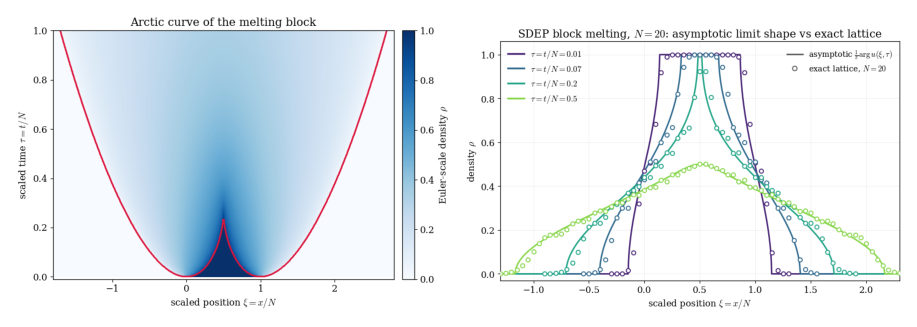
<figcaption class="paper-figure-caption"><b>Fig 1.</b> Figure 1: Euler-scale melting of the block SN = {1, . . . , N}, with ξ = x/N, τ = t/N and w = 1</figcaption>
</figure>
<figure class="paper-figure-card">
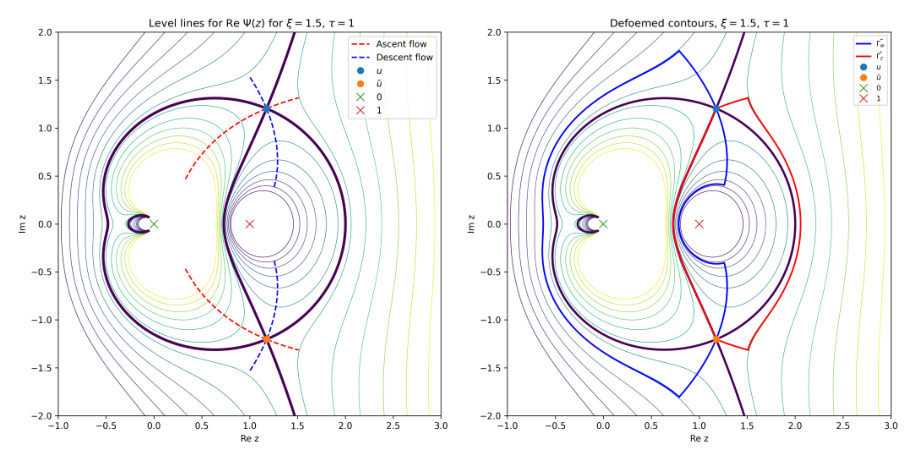
<figcaption class="paper-figure-caption"><b>Fig 2.</b> Figure 2: Steepest-descent geometry for the phase Ψξ,τ, shown for a representative point (ξ, τ) in the liquid region. Left: level curves of ℜΨξ,τ. The thick purple curve is the equal-height locus through the relevant critical point, while dashed curves indicate ascent and descent directions. Right: deformation of the original contours to the steepest-descent contours eΓω and eΓz. The Euler-scale density is produced by the crossing of these deformed contours.</figcaption>
</figure>
</div>

<p><strong>Summary.</strong> This paper derives exact analytical formulas for the time evolution of the Symmetric Dyson Exclusion Process (SDEP) by mapping it to an exactly solvable free-fermion model. Using advanced techniques like determinantal kernels and steepest descent, the authors determine the density profile and confirm that its macroscopic limit matches established hydrodynamic predictions.</p>
<p><strong>Why it may be interesting.</strong> The connection between integrable quantum spin chains, exclusion processes, and continuum hydrodynamics is a cornerstone of modern non-equilibrium statistical mechanics. The exact derivation provides rigorous mathematical confirmation for conjectured scaling laws.</p>
<details>
<summary>Detailed structure</summary>
<p><strong>Main problem.</strong> The primary goal is to derive exact evolution formulas for the Symmetric Dyson Exclusion Process (SDEP) starting from deterministic initial configurations, and subsequently analyzing its macroscopic limits.</p>
<p><strong>Main result.</strong> Exact determinantal kernel expressions are found for density evolution in both finite and infinite lattices, confirming that the Euler-scale limit yields the conjectured hydrodynamic profile and arctic curve.</p>
<p><strong>Method.</strong> The authors exploit the mapping of SDEP to a free-fermion model (XX chain ground state transform), allowing the use of Wick's theorem and solving the resulting kernel evaluation via trigonometric Lagrange interpolation.</p>
<p><strong>Model / system.</strong> The system is the Symmetric Dyson Exclusion Process (SDEP) on a lattice, characterized by long-range logarithmic Coulomb interactions. It is mathematically equivalent to conditioned random walkers or the ground-state transform of the spin-1/2 XX quantum chain.</p>
<p><strong>Key observables.</strong> Density profile evolution $
ho(x, t)$, density moments (governed by a finite polynomial algebra), and the arctic curve separating frozen/liquid regions.</p>
<p><strong>Important parameters / regimes.</strong> Lattice size $L$, time $t$, and the specific initial configuration determining the kernel evaluation.</p>
<p><strong>Assumptions / limitations.</strong> The solvability provided by the free-fermion mapping is crucial for deriving exact results, particularly when evaluating the mixed correlation kernel via Lagrange interpolation.</p>
<p><strong>Figures summary.</strong> Figure 2 illustrates the steepest-descent geometry used in the asymptotic analysis, showing level curves and the deformation of contours to extract the final density result.</p>
<p><strong>Paper structure.</strong> The paper progresses by establishing the free-fermion mapping (Section 2), deriving correlation functions using determinantal kernels (Section 3), obtaining general density evolution formulas (Section 4), analyzing moment algebras and block melting (Section 5), and finally tackling the macroscopic Euler-scale limit (Section 6).</p>
</details>
<details>
<summary>Abstract</summary>
<p>The symmetric Dyson exclusion process (SDEP) is an exclusion process on the lattice with a long-range logarithmic Coulomb-type interaction. It appears in several equivalent forms: as symmetric random walkers conditioned, in the Doob-transform sense, not to collide; as the maximal-activity limit of a conditioned SSEP; and as a ground-state transform of the spin- 1/2 XX chain. In this work, we exploit this latter representation to obtain exact evolution formulas from deterministic initial configurations. The resulting determinantal kernel is expressed through a finite interpolation expression in terms of Lagrange polynomials, leading to explicit density evolution in finite and infinite lattices. For the melting of a densely packed block, we show that the full hierarchy of density moments is governed by a finite-dimensional polynomial algebra, and we identify Catalan numbers in the leading time coefficients. We also derive the Euler-scale density profile and the arctic curve separating frozen and liquid regions, and show that they coincide with conjectured hydrodynamic results obtained in a previous work.</p>
</details>
<p><sub><a href="#top">↑ back to top</a></sub></p>

<p><a id="paper-2607.29590"></a></p>
<h3 id="spindrift-learning-quantum-degeneracy-from-thermal-purity-in-restricted-path-integral-monte-carlo"><a href="http://arxiv.org/abs/2607.29590v1">Spindrift: Learning quantum degeneracy from thermal purity in restricted path integral Monte Carlo</a></h3>
<p><strong>Authors:</strong> Jarvist Moore Frost<br>
<strong>Type:</strong> theory · <strong>Category:</strong> disordered systems and neural networks · <strong>PDF:</strong> <a href="https://arxiv.org/pdf/2607.29590v1">https://arxiv.org/pdf/2607.29590v1</a><br>
<strong>Analysis basis:</strong> full PDF text, analyzed in chunks
<strong>Topic relevance:</strong> <code>methods for driven-dissipative</code> <strong>3/5</strong> · <code>analog quantum simulation</code> <strong>2/5</strong> · <code>Keldysh / 2PI / non-Gaussian methods</code> <strong>1/5</strong> · <code>non-equilibrium dynamics</code> <strong>1/5</strong></p>
<div class="figure-strip-hint">↔ Scroll figures horizontally</div>
<div class="paper-figures-scroll">
<figure class="paper-figure-card">
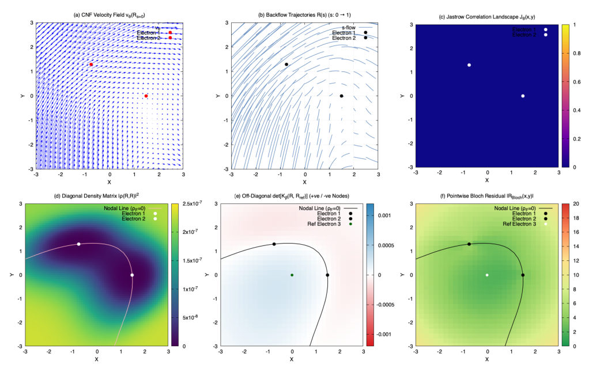
<figcaption class="paper-figure-caption"><b>Fig 1.</b> FIG. 1: Initial state of the neural density matrix model prior to training, internal structure (top) and physical observables (bottom), for N = 3 spin-polarised Fermions in a 2D harmonic trap. Most figures are generated by constraining two electrons to sit on the Wigner radius (1.5, where the Coulomb and Harmonic force balance), and then using the third electron as the test particle. (a) The randomly initialised continuous normalising flow (CNF) velocity field vθ(R, s = 0) shows vortices. This is due to the permutation-equivariance enforced on the network; the random vector fields are thereby symmetric around the particle positions. (b) The random field generates rather large backflow...</figcaption>
</figure>
<figure class="paper-figure-card">
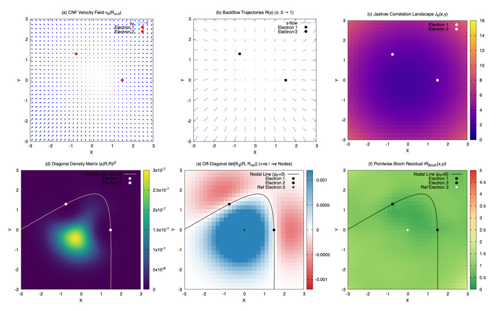
<figcaption class="paper-figure-caption"><b>Fig 2.</b> FIG. 2: Neural density matrix model internal structure (top) and physical observables (bottom), for N = 3 spin-polarised Fermions in a 2D harmonic trap at β = 0.8. (a) Continuous normalising flow (CNF) velocity field vθ(R, s = 0) driving the quasi-particle transform. (b) Integrated backflow trajectories R(s) over fictitious time s ∈[0, 1]. (c) Symmetric Jastrow correlation landscape Jθ(x, y). Clearly this has learnt the harmonic confinement of the trap, compared to the free-particle starting point. (d) Diagonal probability density |ρ(R, R)|2, showing spatial localisation of the 3rd electron. Pink contour is the nodal structure from the following panel. Clearly the model has learned to fill...</figcaption>
</figure>
<figure class="paper-figure-card">
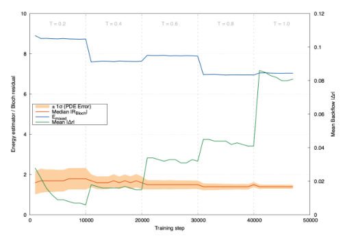
<figcaption class="paper-figure-caption"><b>Fig 3.</b> FIG. 3: Training along the temperature curriculum (βstage = 0.2, 0.4, . . . , 1.0, dashed boundaries). Shown are the mixed energy estimator (blue, in units of ¯hω), the median Bloch residual energy with its spatial standard-deviation (orange), and the mean backflow displacement magnitude (green, axis on right). As we approach β = 1, we are entering quantum degeneracy, leading to the large up-tick in backflow strength to enforce the Pauli exclusion. We can see that SPINDRIFT successfully reduces the spatial standard deviation of the Bloch residual, while the median Bloch residual plateaus near 1 ¯hω. This may indicate that while the algorithm and the learning are functioning, our current...</figcaption>
</figure>
</div>

<p><strong>Summary.</strong> Spindrift introduces a novel Variational Density Matrix approach that uses continuous normalising flows to learn the complex nodal structure of the thermal density matrix in restricted Path Integral Monte Carlo simulations. By training this model across an imaginary time curriculum, it bypasses the need for pre-supplied node information, establishing a self-consistent framework for studying interacting fermions at finite temperatures.</p>
<p><strong>Why it may be interesting.</strong> This work represents a significant advancement in applying deep generative models (CNFs) to solve fundamental many-body quantum simulation problems, providing a self-consistent way to handle nodal structure which is central to fermionic physics.</p>
<details>
<summary>Detailed structure</summary>
<p><strong>Main problem.</strong> The primary challenge is overcoming the Fermion sign problem in quantum Monte Carlo simulations, which limits the accurate calculation of ground state and finite-temperature properties.</p>
<p><strong>Main result.</strong> The proposed method, Spindrift, successfully trains a variational density matrix that self-consistently learns the nodal structure across an imaginary time curriculum, yielding lower energy estimates than free-particle references.</p>
<p><strong>Method.</strong> It employs a Variational Density Matrix approach parameterized by a permutation-equivariant continuous normalising flow (CNF) to generate quasi-particle backflow trajectories. Training is performed via curriculum learning using the Bloch residual as the loss function.</p>
<p><strong>Model / system.</strong> The study focuses on $N=3$ interacting spin-polarized Fermions confined in a two-dimensional harmonic trap. The simulation evolves the thermal density matrix ($
ho$) from high temperature towards quantum degeneracy.</p>
<p><strong>Key observables.</strong> Mixed energy estimator, Bloch residual ($E_{	ext{res}}$), and mean backflow displacement magnitude are tracked as diagnostics for nodal accuracy and convergence.</p>
<p><strong>Important parameters / regimes.</strong> The imaginary time/temperature curriculum ($eta$ progression) is crucial, moving from high temperature ($eta 	o 0$) to quantum degeneracy ($eta=1$).</p>
<p><strong>Assumptions / limitations.</strong> The method assumes that the density matrix can be accurately parameterized by a CNF augmented with a Jastrow factor. A key limitation is the lack of an explicit nodal action in the estimator.</p>
<p><strong>Figures summary.</strong> Figures track energy estimators, Bloch residuals, and backflow displacement across temperature stages ($eta=0.2$ to $1.0$), demonstrating the smooth deformation of the nodal structure as quantum correlations build up.</p>
<p><strong>Paper structure.</strong> The paper introduces Spindrift as a solution to the sign problem in PIMC by learning $
ho$. It details the CNF architecture and training strategy using curriculum learning on the Bloch residual, culminating in energy comparisons against known limits.</p>
</details>
<details>
<summary>Abstract</summary>
<p>Restricted path integral Monte Carlo (RPIMC) sidesteps the fluctuating Fermion sign problem by confining paths within nodal pockets of a trial density matrix, thereby recovering polynomial scaling. However, this nodal surface must be provided from elsewhere; unless it is exact, it introduces a fixed-node energy error.   Here we introduce \textsc{Spindrift}, a Variational Density Matrix approach that learns the many-body Fermionic density matrix from a regularised Bloch residual, evaluated on samples drawn by a restricted Worm algorithm. Motivated by the observation of the `purity' of quantum mechanics at high temperature (where kinetic energy dominates), we train the density matrix along a temperature (imaginary time) curriculum, learning increasingly large \emph{corrections} to the initial free-particle reference. We parametrise our model with a permutation-equivariant continuous normalising flow to generate quasi-particle backflow trajectories, modulated by a symmetric Jastrow factor. This architecture guarantees exact Fermionic antisymmetry and spatial symmetry throughout training.   Simulating $N=3$ interacting Fermions in a two-dimensional harmonic trap, we demonstrate stable curriculum training. The learnt velocity field smoothly deforms the nodal structure away from the free-particle reference. Open-Worm G-sector trapping provides a natural diagnostic for nodal accuracy.   Although the current lack of a nodal action in our estimator precludes absolute benchmarking, \textsc{Spindrift} lowers the restricted thermodynamic energy relative to the free-particle reference at each temperature, establishing a stable, physics-informed framework for finite-temperature quantum Monte Carlo where the nodal structure is learnt self-consistently.</p>
</details>
<p><sub><a href="#top">↑ back to top</a></sub></p>

<p><a id="paper-2607.29123"></a></p>
<h3 id="numerical-optimization-of-two-qubit-gates-in-silicon-flip-flop-qubit-arrays-under-electrical-control"><a href="http://arxiv.org/abs/2607.29123v1">Numerical Optimization of Two-Qubit Gates in Silicon Flip-Flop Qubit Arrays under Electrical Control</a></h3>
<p><strong>Authors:</strong> Lorenzo D'Onofrio, Elena Ferraro, Marco De Michielis<br>
<strong>Type:</strong> theory · <strong>Category:</strong> quantum information and computing · <strong>PDF:</strong> <a href="https://arxiv.org/pdf/2607.29123v1">https://arxiv.org/pdf/2607.29123v1</a><br>
<strong>Analysis basis:</strong> full PDF text, analyzed in chunks
<strong>Topic relevance:</strong> <code>spintronics-quantum-optics interface</code> <strong>3/5</strong> · <code>QC/QI experiment</code> <strong>2/5</strong> · <code>exotic spin models in light-matter</code> <strong>1/5</strong></p>
<div class="figure-strip-hint">↔ Scroll figures horizontally</div>
<div class="paper-figures-scroll">
<figure class="paper-figure-card">
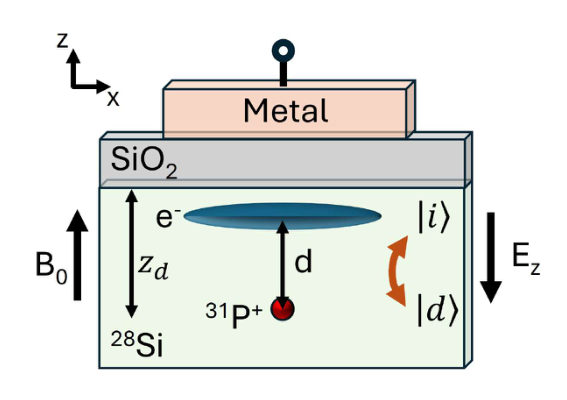
<figcaption class="paper-figure-caption"><b>Fig 1.</b> Figure 1: Schematic of a flip-flop qubit. A 31P donor atom is embedded in bulk 28Si at a distance zd from the Si/SiO2 interface. An electric field Ez, applied through a metal gate, enables control of the electron position between the donor-bound state (|d⟩) and the interface-bound state (|i⟩). The parameter d denotes the separation between the mean positions of the donor- and interface-bound electron wavefunctions. A static magnetic field B0 is applied along the ˆz axis.</figcaption>
</figure>
<figure class="paper-figure-card">
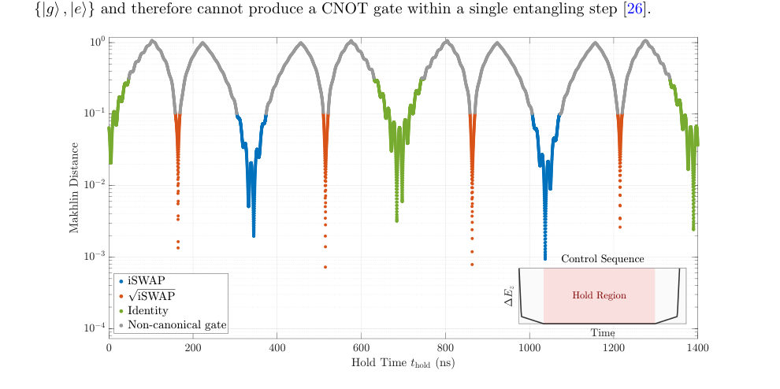
<figcaption class="paper-figure-caption"><b>Fig 2.</b> Figure 2: Classification of two-qubit operations via Makhlin invariants as a function of the hold time thold at the ionization point (∆Ez = 0 V/m). The inset shows the symmetric control sequence applied to both qubits, displaying the vertical electric field deviation ∆Ez from the ionization reference E0 z. For each hold time, the plotted quantity is the minimum Euclidean distance between the computed Makhlin vector and the nearest ideal gate class (iSWAP, √</figcaption>
</figure>
<figure class="paper-figure-card">
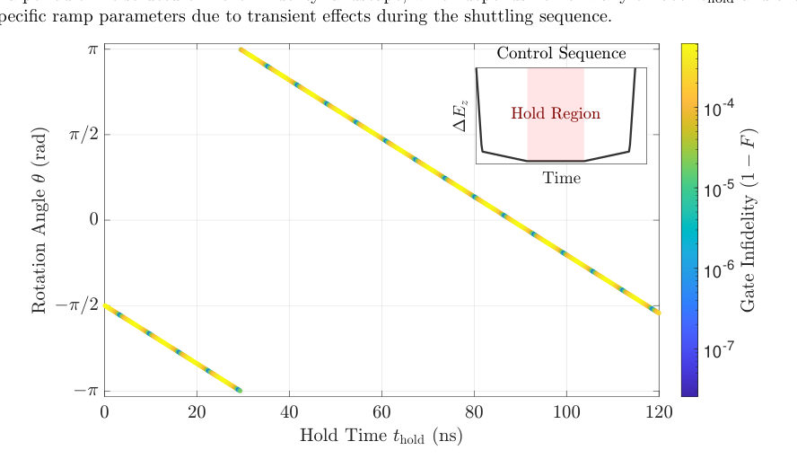
<figcaption class="paper-figure-caption"><b>Fig 3.</b> Figure 3: Phase calibration landscape for an Rz(θ) gate in a single-qubit system. The rotation angle θ (y-axis) is extracted via bounded optimization of the effective propagator as a function of the hold time thold at the clock-transition point (x-axis). Color mapping indicates gate infidelity (1−F), accounting for both coherent errors and leakage to higher energy levels. The inset shows the control sequence, displaying the vertical electric field deviation ∆Ez from the ionization reference E0 z. Ramps are executed to and from the clock-transition bias point ∆Ect = 290 V/m.</figcaption>
</figure>
<figure class="paper-figure-card">
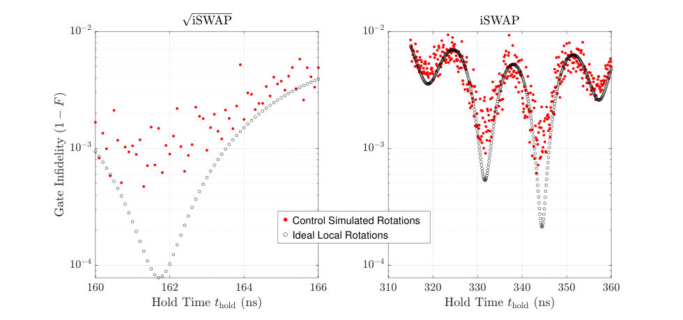
<figcaption class="paper-figure-caption"><b>Fig 4.</b> Figure 4: Optimization landscape for composite two-qubit entangling gates. Gate infidelity is shown as a function of the hold time thold at the ionization point (∆Ez = 0 V/m) for √</figcaption>
</figure>
<figure class="paper-figure-card">
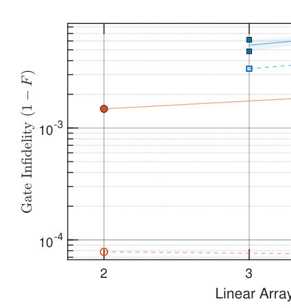
<figcaption class="paper-figure-caption"><b>Fig 5.</b> Figure 5: Lowest gate infidelity for √</figcaption>
</figure>
</div>

<p><strong>Summary.</strong> The paper presents a numerical framework to optimize two-qubit entangling gates ($\sqrt{iSWAP}$, $iSWAP$) in silicon flip-flop qubits using electrical control. It shows that achieving high fidelity requires more than just optimizing the interaction time; active local phase compensation and careful consideration of qubit geometry are crucial for scalability.</p>
<p><strong>Why it may be interesting.</strong> This work provides a detailed blueprint for engineering quantum gates in solid-state platforms, demonstrating that theoretical gate design must be coupled with practical pulse shaping and device geometry considerations to achieve fault tolerance.</p>
<details>
<summary>Detailed structure</summary>
<p><strong>Main problem.</strong> The primary challenge is achieving high-fidelity entangling quantum gates in silicon flip-flop qubits while managing complex interactions arising from orbital dynamics and neighboring qubits.</p>
<p><strong>Main result.</strong> High fidelity requires a co-design approach that simultaneously optimizes pulse control, local phase compensation via calibrated Rz rotations, and accounts for the physical device geometry.</p>
<p><strong>Method.</strong> The authors use numerical simulation (FlipFlopQSim) combined with Makhlin invariants to map the entangling gate landscape and optimize control pulses.</p>
<p><strong>Model / system.</strong> The system is based on silicon donor flip-flop qubits, whose dynamics are governed by a Hamiltonian including Zeeman, hyperfine, and long-range dipole-dipole interactions. The simulation models coupled spin-orbital dynamics.</p>
<p><strong>Key observables.</strong> Gate infidelity ($1-F$), which must be kept below the fault-tolerance threshold ($\le 10^{-3}$), and the effective logical gate operations (e.g., $\sqrt{iSWAP}$, $iSWAP$).</p>
<p><strong>Important parameters / regimes.</strong> The analysis depends on specific physical parameters like magnetic fields ($B_0 = 0.4 	ext{ T}$) and coupling strengths, and explores regimes based on pulse hold times ($t_{	ext{hold}}$).</p>
<p><strong>Assumptions / limitations.</strong> Key assumptions include using a reduced flip-flop subspace approximation to manage Hilbert space scaling and assuming that spectator qubits remain unexcited during the active gate operation.</p>
<p><strong>Figures summary.</strong> Figures illustrate the mapping of entangling gates using Makhlin distance vs. hold time, showing how optimal $\sqrt{iSWAP}$ and $iSWAP$ are achieved through specific pulse timings and local corrections.</p>
<p><strong>Paper structure.</strong> The paper introduces the physical model and challenges; it then details the use of Makhlin invariants to characterize two-qubit gates; subsequent sections focus on optimizing gate fidelity by implementing local phase compensation using calibrated Rz rotations, culminating in an analysis of multi-qubit scalability.</p>
</details>
<details>
<summary>Abstract</summary>
<p>Silicon-based donor flip-flop qubits offer a promising path toward scalable, fault-tolerant quantum computing by combining the long coherence times of nuclear spins with fast, fully electrical control and long-range dipole-dipole coupling between qubits. However, realizing high-fidelity entangling operations in this platform remains challenging. The entangling interaction is intrinsically coupled to electron orbital dynamics, which can lead to leakage into non-computational states and unwanted phase accumulation. Furthermore, in multi-qubit architectures, residual dipolar couplings from spectator qubits distort the effective interaction landscape. In this work, we employ a numerical simulation framework, FlipFlopQSim, that models the spin-orbital dynamics of interacting flip-flop qubits to extract effective logical operations from realistic electrical control pulses. Using Makhlin invariants, we map the entangling landscape generated by electrically controlled dipole-dipole interactions and identify operating regions locally equivalent to canonical two-qubit gates, such as $\sqrt{iSWAP}$ and $iSWAP$. We then optimize the control parameters of physically realizable, electrically driven $R_z$ rotations to implement the necessary local corrections and maximize composite gate fidelity. Finally, we scale our analysis to multi-qubit registers with various geometries and connectivity patterns to evaluate spectator-induced distortions. Our results demonstrate that high-fidelity entangling operations cannot be optimized in isolation; rather, they require a co-design approach that simultaneously optimizes pulse control, local phase compensation, and physical device geometry. This work provides a robust numerical framework for assessing the scalability of electrically controlled silicon quantum processors and outlines key design principles for robust multi-qubit gate implementation.</p>
</details>
<p><sub><a href="#top">↑ back to top</a></sub></p>

<p><a id="paper-2607.29170"></a></p>
<h3 id="scalar-curvature-density-as-a-new-invariant-in-thermodynamic-geometry-metric-dependence-and-critical-exponents"><a href="http://arxiv.org/abs/2607.29170v1">Scalar curvature density as a new invariant in thermodynamic geometry: metric dependence and critical exponents</a></h3>
<p><strong>Authors:</strong> José Torres-Arenas, Jaime Jaramillo-Gutiérrez, Juan Becerra-Zamudio<br>
<strong>Type:</strong> theory · <strong>Category:</strong> statistical mechanics · <strong>PDF:</strong> <a href="https://arxiv.org/pdf/2607.29170v1">https://arxiv.org/pdf/2607.29170v1</a><br>
<strong>Analysis basis:</strong> full PDF text, analyzed in chunks
<strong>Topic relevance:</strong> <code>non-equilibrium universality</code> <strong>3/5</strong> · <code>Keldysh / 2PI / non-Gaussian methods</code> <strong>1/5</strong> · <code>driven-dissipative phase transition</code> <strong>1/5</strong> · <code>non-equilibrium dynamics</code> <strong>1/5</strong></p>
<div class="figure-strip-hint">↔ Scroll figures horizontally</div>
<div class="paper-figures-scroll">
<figure class="paper-figure-card">
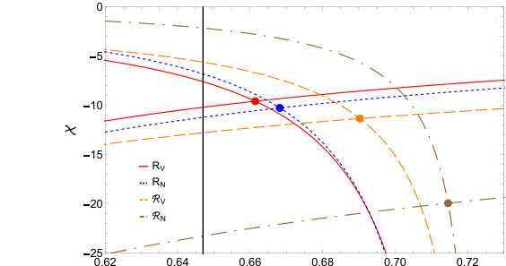
<figcaption class="paper-figure-caption"><b>Fig 1.</b> FIG. 1. Crossing of the vapor and liquid branches for the ge- ometrical quantities of the van der Waals fluid at Tr = 0.90: RV (red line), RN (dotted blue line), RV (dashed orange line), and RN (dash-dotted brown line). The colored points repre- sent the values predicted by the X-crossing method for each quantity, while the vertical black line represents the coexis- tence vapor-liquid value obtained from the thermodynamic method (black line).</figcaption>
</figure>
<figure class="paper-figure-card">
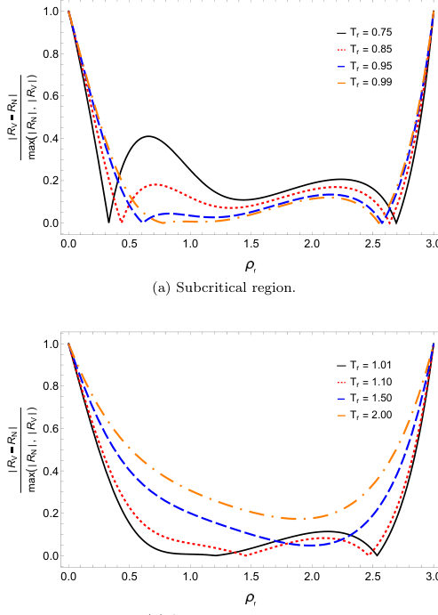
<figcaption class="paper-figure-caption"><b>Fig 2.</b> FIG. 2. Isotherms of the ratio |RV −RN |/ max(|RV |, |RN |) for the van der Waals fluid in the subcritical and supercritical regions.</figcaption>
</figure>
<figure class="paper-figure-card">
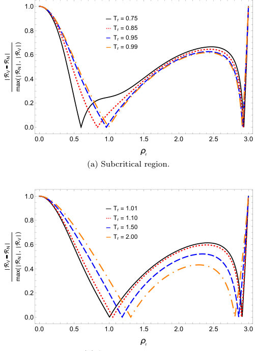
<figcaption class="paper-figure-caption"><b>Fig 3.</b> FIG. 3. Isotherms of the ratio |RV −RN |/ max(|RV |, |RN |) for the van der Waals fluid in the subcritical and supercritical regions.</figcaption>
</figure>
<figure class="paper-figure-card">
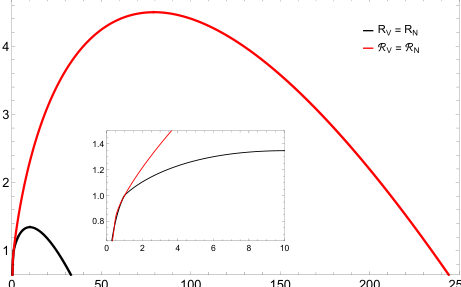
<figcaption class="paper-figure-caption"><b>Fig 4.</b> FIG. 4. Thermodynamic states in the (T, P) plane for which the geometric quantities calculated from the V -metric and N-metric coincide for the van der Waals fluid. The black line corresponds to the condition RV = RN , while the red line corresponds to RV = RN . Along these curves, both thermodynamic representations yield an identical geometric description of the system.</figcaption>
</figure>
<figure class="paper-figure-card">
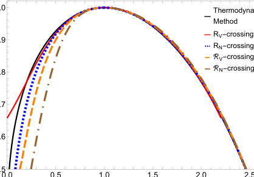
<figcaption class="paper-figure-caption"><b>Fig 5.</b> FIG. 5. Vapor-liquid coexistence curve for the van der Waals fluid. The black line is calculated using the thermodynamic method, the other ones are obtained using the R-crossing method, with the quantities: RV (red line), RN (dotted blue line), RV (dashed orange line), and RN (dash-dotted brown line).</figcaption>
</figure>
</div>

<p><strong>Summary.</strong> This work develops thermodynamic geometry by introducing the scalar curvature density ($\mathcal{R}$) as a new invariant alongside standard curvature ($R$). By comparing metrics derived from fixed volume versus fixed particle number ensembles across various fluid models, the authors show that $\mathcal{R}$ provides a robust geometric probe for critical exponents. The findings establish $\mathcal{R}$'s significance and reveal distinct structural features in phase diagrams compared to simpler geometric measures.</p>
<p><strong>Why it may be interesting.</strong> While focused on classical fluids, the rigorous mathematical framework connecting geometric invariants to universal critical exponents ($eta$) provides a powerful, generalizable theoretical tool for analyzing any system exhibiting continuous phase transitions.</p>
<details>
<summary>Detailed structure</summary>
<p><strong>Main problem.</strong> The study systematically compares different geometric invariants (metrics and curvature measures) derived from thermodynamic geometry to understand how ensemble constraints affect the description of phase transitions.</p>
<p><strong>Main result.</strong> The scalar curvature density ($\mathcal{R}$) is established as a meaningful complement to standard curvature ($R$), showing distinct critical scaling related solely to the order parameter exponent $eta$.</p>
<p><strong>Method.</strong> The authors construct and analyze two metrics ($g_V$ and $g_N$) leading to four geometric invariants ($R, \mathcal{R}$ for both ensembles), comparing their behavior near criticality and across phase coexistence regions.</p>
<p><strong>Model / system.</strong> The analysis is performed on simple fluid models: van der Waals, Lennard-Jones potential systems, and Argon described by a multiparameter equation of state that reproduces non-mean-field critical behavior consistent with the Ising universality class.</p>
<p><strong>Key observables.</strong> Scalar curvature ($R$), scalar curvature density ($\mathcal{R}$), Widom lines (minima loci for the four invariants), Curvature Equality Curve (CEC), and Curvature-Density Equality Curve (CDEC).</p>
<p><strong>Important parameters / regimes.</strong> Critical exponents ($eta, 
u$), reduced temperature ($t$), and ensemble choice (Volume vs. Number of particles).</p>
<p><strong>Assumptions / limitations.</strong> The analysis relies on standard critical scaling laws and hyperscaling relations; the use of specific equations of state for physical realism is key.</p>
<p><strong>Figures summary.</strong> Figures illustrate the crossing points of the four invariants ($   ext{RV},    ext{RN}, \mathcal{R}_V, \mathcal{R}_N$) defining coexistence curves, and show the distinct fourfold structure of Widom lines in the supercritical region for Argon.</p>
<p><strong>Paper structure.</strong> The paper progresses by introducing ensemble-dependent metrics ($g_V$ vs $g_N$), calculating both curvature ($R$) and density ($\mathcal{R}$), demonstrating their unique critical scaling properties, defining new equality curves (CEC/CDEC), and finally comparing the reconstruction of phase coexistence using these four invariants across multiple fluid models.</p>
</details>
<details>
<summary>Abstract</summary>
<p>We compare two Ruppeiner metrics constructed under fixed volume and fixed particle number conditions ($g_{_V}$ and $g_{_V}$) by analyzing the scalar curvature $R$ and introducing the scalar curvature density $\mathcal{R} = \sqrt{|g|}\,R$ as a complementary geometric invariant. Three fluid models of increasing physical realism are considered: van der Waals, Lennard-Jones, and argon described by a multiparameter equation of state that correctly reproduces non-mean-field critical behavior consistent with the Ising universality class. We find that $R$ and $\mathcal{R}$ exhibit distinct critical scaling: $R \sim t^{-dν}$ is governed by the correlation length exponent, whereas $\mathcal{R} \sim t^{-(1+β)}$ scales solely with the order parameter exponent $β$, a result that follows analytically from hyperscaling and the Rushbrooke relation independently of the universality class. The $N$-metric consistently outperforms the $V$-metric in reconstructing the vapor-liquid coexistence curve away from criticality, and the four Widom lines defined by the minima of $R_{_V}$, $R_{_N}$, $\mathcal{R}_{_V}$, and $\mathcal{R}_{_N}$ display a characteristic fourfold structure reproduced across all three models. The loci where both representations yield identical geometric descriptions define two new objects: the Curvature Equality Curve (CEC, $R_{_V} = R_{_N}$) and the Curvature-Density Equality Curve (CDEC, $\mathcal{R}_{_V} = \mathcal{R}_{_N}$), with the CDEC enclosing a substantially larger region of the phase diagram in all cases. These results establish $\mathcal{R}$ as a meaningful complement to $R$ in thermodynamic geometry and highlight the nontrivial role of metric choice in the description of phase transitions and supercritical behavior.</p>
</details>
<p><sub><a href="#top">↑ back to top</a></sub></p>

<p><a id="paper-2607.28998"></a></p>
<h3 id="construction-of-sets-of-orthogonal-quantum-states-with-minimal-nonlocality-in-bipartite-and-tripartite-systems-of-unequal-local-dimensions"><a href="http://arxiv.org/abs/2607.28998v1">Construction of Sets of Orthogonal Quantum States with Minimal Nonlocality in Bipartite and Tripartite Systems of Unequal Local Dimensions</a></h3>
<p><strong>Authors:</strong> Ben-Hao Zhao, Dong-Huan Jiang, Yu-Guang Yang, Guang-Bao Xu<br>
<strong>Type:</strong> theory · <strong>Category:</strong> quantum information and computing · <strong>PDF:</strong> <a href="https://arxiv.org/pdf/2607.28998v1">https://arxiv.org/pdf/2607.28998v1</a><br>
<strong>Analysis basis:</strong> full PDF text, analyzed in chunks
<strong>Topic relevance:</strong> <code>entanglement &amp; information structure</code> <strong>3/5</strong> · <code>correlated / nonlocal dissipation</code> <strong>1/5</strong> · <code>quantum measurements</code> <strong>1/5</strong></p>
<div class="figure-strip-hint">↔ Scroll figures horizontally</div>
<div class="paper-figures-scroll">
<figure class="paper-figure-card">
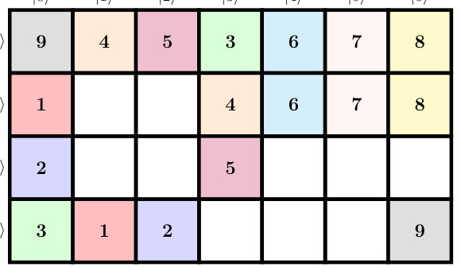
<figcaption class="paper-figure-caption"><b>Fig 1.</b> FIG. 1. The structure of the set S1 in C4 ⊗C7 space, where |φ10⟩, |φ11⟩and |φ12⟩cover multiple grids in the figure and thus are not marked separately. The subsequent figures follow the same convention.</figcaption>
</figure>
<figure class="paper-figure-card">
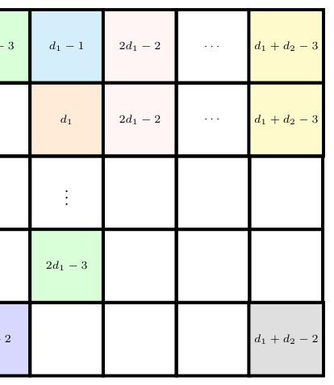
<figcaption class="paper-figure-caption"><b>Fig 2.</b> FIG. 2. The structure of the set S2 in Cd1 ⊗Cd2 space, where 4 ≤d1 &lt; d2.</figcaption>
</figure>
<figure class="paper-figure-card">
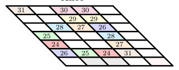
<figcaption class="paper-figure-caption"><b>Fig 3.</b> FIG. 3. The structure of the set S4 in C5 ⊗C7 ⊗C9 space.</figcaption>
</figure>
</div>

<p><strong>Summary.</strong> This paper develops general methods to construct sets of orthogonal quantum states exhibiting minimal nonlocality in both bipartite and tripartite quantum systems with unequal local dimensions. The authors prove that removing any single state from the set allows for perfect distinguishability via LOCC, while the full set resists such distinction. This settles a long-standing construction problem in quantum information theory.</p>
<p><strong>Why it may be interesting.</strong> This work provides rigorous mathematical tools for characterizing fundamental resource properties (nonlocality) in multipartite quantum systems, which is crucial for understanding communication complexity and security protocols.</p>
<details>
<summary>Detailed structure</summary>
<p><strong>Main problem.</strong> The research aims to determine the minimal cardinality of nonlocal sets of orthogonal quantum states, specifically for bipartite and tripartite systems with unequal local dimensions.</p>
<p><strong>Main result.</strong> The authors successfully provide general construction methods that settle the problem of finding such sets in both bipartite ($    ext{C}<em d_2>{d_1} \otimes    ext{C}</em>}$) and tripartite ($ ext{C<em d_2>{d_1} \otimes    ext{C}</em>$) systems with unequal local dimensions.} \otimes    ext{C}_{d_3</p>
<p><strong>Method.</strong> The methodology involves constructing specific sets of orthogonal states and then proving minimal nonlocality by analyzing the conditions under which subsets of these states remain perfectly distinguishable via Local Operations and Classical Communication (LOCC).</p>
<p><strong>Model / system.</strong> The study focuses on quantum systems described by tensor products of Hilbert spaces, specifically $ ext{C}<em d_2>{d_1} \otimes    ext{C}</em>}$ (bipartite) and $ ext{C<em d_2>{d_1} \otimes    ext{C}</em>$ (tripartite), where the local dimensions ($d_i$) are unequal.} \otimes    ext{C}_{d_3</p>
<p><strong>Key observables.</strong> Minimal nonlocality, distinguishability via LOCC, and the structure of measurement operators ($\{M^\dagger_{AMA}\}$ or $\{M^\dagger_{BMB}\}$).</p>
<p><strong>Important parameters / regimes.</strong> The local dimensions $d_1, d_2, d_3$, and the specific indices defining the states within the set.</p>
<p><strong>Assumptions / limitations.</strong> The proofs rely on analyzing orthogonality conditions derived from assuming the existence of LOCC measurements that preserve state orthogonality.</p>
<p><strong>Figures summary.</strong> Figure 1 illustrates the structure of a minimal nonlocal set in $  ext{C}_4 \otimes    ext{C}_7$. Figures 2 and 3 illustrate the structures of sets $S_2$ and $S_3$, respectively, in bipartite and tripartite spaces.</p>
<p><strong>Paper structure.</strong> The paper progresses by first solving the problem for a specific case ($   ext{C}_4 \otimes    ext{C}_7$), then generalizing the construction method to arbitrary unequal-dimensional bipartite systems, and finally extending this generalization to tripartite quantum systems.</p>
</details>
<details>
<summary>Abstract</summary>
<p>The research on minimal nonlocality aims to determine the minimal cardinality of nonlocal sets of quantum states. However, the construction of a nonlocal set of states in bipartite or tripartite quantum systems with unequal local dimensions remains unsolved. In this paper, we first give a method to construct a set of orthogonal quantum states with minimal nonlocality in $\mathbb{C}^{4} \otimes \mathbb{C}^{7}$ quantum system. Then we give a general method to construct a set of orthogonal quantum states with minimal nonlocality in a bipartite quantum system with unequal local dimensions. Furthermore, we generalize the construction method to tripartite quantum system with unequal local dimensions, and construct a set of orthogonal quantum states with minimal nonlocality in $\mathbb C^{d_1} \otimes \mathbb C^{d_2}\otimes \mathbb C^{d_3}$ quantum system for $5\le d_1 < d_2 < d_3$. Our work settles the construction problem of a set of orthogonal states with minimal nonlocality in both bipartite and tripartite systems with unequal local dimensions.</p>
</details>
<p><sub><a href="#top">↑ back to top</a></sub></p>

<p><a id="paper-2607.29505"></a></p>
<h3 id="high-na-vectorial-hologram-optimization"><a href="http://arxiv.org/abs/2607.29505v1">High-NA vectorial hologram optimization</a></h3>
<p><strong>Authors:</strong> Michael Wischert, Fiona Hellstern, Paul Uerlings, Tilman Pfau, Stephan Welte, Ralf Klemt<br>
<strong>Type:</strong> theory · <strong>Category:</strong> other · <strong>PDF:</strong> <a href="https://arxiv.org/pdf/2607.29505v1">https://arxiv.org/pdf/2607.29505v1</a><br>
<strong>Analysis basis:</strong> full PDF text, analyzed in chunks
<strong>Topic relevance:</strong> <code>interference shaping light</code> <strong>3/5</strong> · <code>analog quantum simulation</code> <strong>1/5</strong> · <code>methods for driven-dissipative</code> <strong>1/5</strong></p>
<div class="figure-strip-hint">↔ Scroll figures horizontally</div>
<div class="paper-figures-scroll">
<figure class="paper-figure-card">
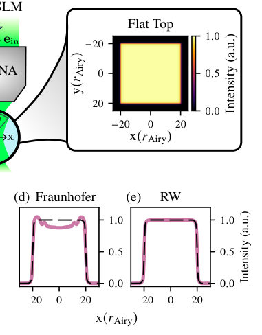
<figcaption class="paper-figure-caption"><b>Fig 1.</b> Fig. 1. High-NA CGH geometry and representative Fraunhofer model errors. (a) Schematic of the SLM-based high-NA focusing geometry used for the numerical benchmarks. The insets show the tweezer-array and extended flat-top intensity targets. Here 𝑟Airy = 0.61𝜆/NA denotes the Airy-radius diffraction scale. (b)-(e) All displayed intensity data are evaluated with the vectorial Richards-Wolf (RW) propagation model at NA = 0.7. (b) Magnified view of a single, near-diffraction-limited tweezer generated from a phase hologram optimized with scalar Fraunhofer propagation, showing an elliptical focal spot under RW evaluation. The dashed contour marks the 1/𝑒2 intensity level. (c) Corresponding tweezer...</figcaption>
</figure>
<figure class="paper-figure-card">
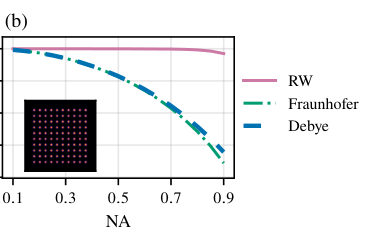
<figcaption class="paper-figure-caption"><b>Fig 2.</b> Fig. 2. Systematic NA dependence of scalar and vectorial CGH fidelity under RW evaluation. For each numerical aperture, the SLM phase was optimized with the indicated forward model and the reported metric was computed after evaluating the final phase with RW propagation. (a) Uniformity 𝑢of the extended flat-top target versus NA. (b) Mean ellipticity 𝜀of the tweezer-array target versus NA, with 𝜀= 1 corresponding to circular traps. The insets show the respective targets, and the dashed gray line in (a) indicates the signal region for the uniformity calculations.</figcaption>
</figure>
<figure class="paper-figure-card">

<figcaption class="paper-figure-caption"><b>Fig 3.</b> Fig. 3. Fully vectorial optimization of an extended flat-top profile at NA = 0.7. All intensities are normalized to the mean total intensity in the flat-top signal region, and the component panels use separate color ranges. Panels (a)-(c) show the component intensities |𝐸𝑥|2, |𝐸𝑦|2, and |𝐸𝑧|2. (d) The resulting total intensity landscape (|E|2). Horizontal and vertical cross-sections (bottom and left margins) compare the optimized solution (solid curve) with the ideal target profile (dashed curve), demonstrating excellent agreement. (e) Self-consistent optimization loss over M for each run, evaluated with the same forward model used during that run. This panel compares convergence behavior...</figcaption>
</figure>
<figure class="paper-figure-card">

<figcaption class="paper-figure-caption"><b>Fig 4.</b> Fig. 4. Direct optimization of a polarization-dependent optical dipole potential at NA = 0.7. All panels are evaluated with the full Richards-Wolf (RW) field and the optical potential of Eq. (9). Panels (a) and (b) use the separate color scales shown by their color bars. (a) Normalized absolute residual Δ ˆ𝑈= | ˆ𝑈sim −ˆ𝑈tar| for the scalar reference, obtained from a Fraunhofer-optimized hologram and evaluated with the full RW optical potential. The normalized potentials ˆ𝑈are mean-subtracted and Frobenius- normalized inside 𝑀1/𝑒2 (dashed contour) as defined in Eq. (12). The arrow indicates the in-plane quantization-axis direction ˆe𝐵. (b) Corresponding normalized absolute residual for...</figcaption>
</figure>
</div>

<p><strong>Summary.</strong> This paper develops a full vectorial framework to optimize computer-generated holograms for high numerical aperture optics, overcoming fidelity losses associated with standard scalar approximations. By using the Richards-Wolf model in a gradient-based optimization loop, the authors demonstrate superior control over target intensity and polarization structure compared to simpler models. This has significant implications for advanced quantum trapping and light-matter interaction experiments.</p>
<p><strong>Why it may be interesting.</strong> This work directly tackles the computational optics challenges inherent in modern quantum trapping and manipulation techniques that rely on precise light field control at high NA. The rigorous comparison between scalar and vectorial models is crucial for designing next-generation optical elements for AMO experiments.</p>
<details>
<summary>Detailed structure</summary>
<p><strong>Main problem.</strong> The study addresses the fidelity degradation when optimizing computer-generated holograms (CGHs) for high numerical aperture (NA) optical systems using standard scalar approximations instead of full vectorial models.</p>
<p><strong>Main result.</strong> Using a differentiable Richards-Wolf model, the optimization successfully generates highly uniform intensity profiles and allows for the direct optimization of objectives dependent on local polarization state, significantly outperforming scalar methods at high NA.</p>
<p><strong>Method.</strong> The authors employ gradient-based nonlinear optimization techniques (e.g., L-BFGS) applied to a differentiable Richards-Wolf forward model to find the optimal phase modulation required to match a target intensity profile.</p>
<p><strong>Model / system.</strong> The system involves using Spatial Light Modulators (SLMs) as programmable pupil-plane phase elements in high-NA focusing geometries. The propagation is modeled by comparing the full vectorial Richards-Wolf (RW) formalism against scalar approximations like Debye and Fraunhofer models.</p>
<p><strong>Key observables.</strong> Target uniformity, mean tweezer ellipticity ($\epsilon$), and reduction in normalized residual for polarization-sensitive potentials.</p>
<p><strong>Important parameters / regimes.</strong> High Numerical Aperture (NA=0.9), target geometries (tweezer arrays, flat-top profiles), and the comparison between vectorial vs. scalar light propagation models.</p>
<p><strong>Assumptions / limitations.</strong> The surrounding medium is assumed to have a refractive index of n=1; scalar models are fundamentally limited as they ignore polarization mixing effects crucial at high NA.</p>
<p><strong>Figures summary.</strong> Figures compare intensity profiles for tweezer and flat-top targets, contrasting the superior uniformity achieved via RW optimization against the fidelity loss observed using scalar approximations (Fraunhofer/Debye).</p>
<p><strong>Paper structure.</strong> The paper establishes the limitations of scalar models at high NA, details the implementation of gradient-based optimization using the full vectorial Richards-Wolf model, demonstrates quantitative improvements in target shaping metrics (uniformity, ellipticity), and extends the framework to polarization-sensitive objectives.</p>
</details>
<details>
<summary>Abstract</summary>
<p>We present a vectorial phase-only framework for the gradient-based optimization of computer-generated holograms. Our approach addresses a critical limitation in high numerical aperture (NA) optical systems, where standard scalar approximations often experience significant fidelity degradation. We highlight the limitations of scalar diffraction models (Fraunhofer and Debye) at high NA for representative classes of target intensities, namely tweezer arrays and extended flat-top profiles. Using a differentiable Richards-Wolf forward model, we numerically demonstrate stable algorithmic convergence and the generation of highly uniform intensity profiles in the deep non-paraxial regime. At NA=0.9, Richards-Wolf (RW) optimization reaches flat-top and tweezer uniformities of 99.97 % and 99.98 %, respectively, with a mean tweezer ellipticity of $\varepsilon=$1.007, while scalar forward models show target-dependent degradation in plateau fidelity or focal geometry. Furthermore, because the RW model returns the full vectorial field, the same framework can optimize objectives that depend on local polarization. We demonstrate this for a polarization-sensitive optical-dipole-potential target, where direct RW-potential optimization reduces the mean normalized residual by more than an order of magnitude when including vector and tensor light-shift terms.</p>
</details>
<p><sub><a href="#top">↑ back to top</a></sub></p>

<p><a id="paper-2607.29073"></a></p>
<h3 id="on-the-origin-of-beyond-classical-advantage-in-the-parity-permutation-problem"><a href="http://arxiv.org/abs/2607.29073v1">On the Origin of Beyond-Classical Advantage in the Parity-Permutation Problem</a></h3>
<p><strong>Authors:</strong> Jayashree Karmakar, Biswadeep Chatterjee, Rafiuddin Gazi, Ananya Chakraborty, Snehasish Roy Chowdhury, Manik Banik, Tamal Guha, Sahil Gopalkrishna Naik, Kunika Agarwal<br>
<strong>Type:</strong> theory · <strong>Category:</strong> quantum information and computing · <strong>PDF:</strong> <a href="https://arxiv.org/pdf/2607.29073v1">https://arxiv.org/pdf/2607.29073v1</a><br>
<strong>Analysis basis:</strong> full PDF text, analyzed in chunks
<strong>Topic relevance:</strong> <code>entanglement &amp; information structure</code> <strong>3/5</strong> · <code>Keldysh / 2PI / non-Gaussian methods</code> <strong>1/5</strong> · <code>quantum measurements</code> <strong>1/5</strong></p>
<div class="figure-strip-hint">↔ Scroll figures horizontally</div>
<div class="paper-figures-scroll">
<figure class="paper-figure-card">

<figcaption class="paper-figure-caption"><b>Fig 1.</b> Figure 1. Left: Three qubits prepared in the product state |ϕ1⟩⊗ |ϕ2⟩⊗|ϕ3⟩, with |ϕ1⟩= |0⟩, |ϕ2⟩= 1 2 |0⟩− √</figcaption>
</figure>
<figure class="paper-figure-card">

<figcaption class="paper-figure-caption"><b>Fig 2.</b> Figure 2. Cube theory: the normalized state space Ωcu ≡ Conv.Hull{ωk}7 k=0. It has the six ray extreme effects {ej i}2,1 i,j=0.</figcaption>
</figure>
</div>

<p><strong>Summary.</strong> The paper analyzes the Parity-Permutation Problem to pinpoint the fundamental resource enabling quantum advantage. It proves that this advantage depends not on entanglement itself, but on the linear dimension of the underlying state space ($L_{dS} \geq n$). This result is significant because it provides a necessary and sufficient condition for detecting non-classical correlations using simple product-state preparations.</p>
<p><strong>Why it may be interesting.</strong> This work provides a deep theoretical characterization of resource theories, showing that operational advantages can be witnessed by simple dimensional constraints rather than requiring complex entanglement structures, which is highly relevant for understanding physical limits in quantum information processing.</p>
<details>
<summary>Detailed structure</summary>
<p><strong>Main problem.</strong> The paper investigates the fundamental resource governing quantum advantage when solving the Parity-Permutation Problem, $P[n]$. It seeks to determine if entanglement or merely the linear dimension of the state space is responsible for non-classical success probabilities.</p>
<p><strong>Main result.</strong> The existence of a probabilistic advantage in $P[n]$ is fundamentally characterized by the linear dimension ($L_{dS}$) of the underlying theory, requiring $L_{dS} \geq n$. This advantage can be achieved using product-state preparations, suggesting that entanglement is not strictly necessary for an operational gain.</p>
<p><strong>Method.</strong> The analysis uses information theoretic tools applied to Generalized Probabilistic Theories (GPTs) to distinguish between two mixed states ($\chi_E$ and $\chi_O$) corresponding to even and odd permutations. Success probabilities are calculated using bounds like the Helstrom bound.</p>
<p><strong>Model / system.</strong> The problem is modeled as determining the parity of a permutation applied to $n$ particles, analyzed first with qubits ($P[3]$) and then generalized to abstract GPTs characterized by their linear dimension $L_{dS}$.</p>
<p><strong>Key observables.</strong> Success probability ($P[n]$), Linear Dimension ($L_{dS}$), Operational Dimension (OD).</p>
<p><strong>Important parameters / regimes.</strong> The number of particles, $n$; the required minimum local dimension for advantage; $\lceil\sqrt{n}
ceil$ levels.</p>
<p><strong>Assumptions / limitations.</strong> The work explores moving beyond standard quantum mechanics by analyzing locally quantum theories and GPTs to test the necessity of entanglement.</p>
<p><strong>Figures summary.</strong> Figure 1 illustrates optimal product state preparation achieving $7/8$ success for $P[3]$, and also shows an alternative scenario achieving perfect success without entanglement. Table II details measurement settings used to distinguish states.</p>
<p><strong>Paper structure.</strong> The paper establishes classical limits, demonstrates quantum advantage using qubits ($P[3]$), then analyzes optimal product vs. bi-separable preparations, culminating in a general theorem characterizing the necessary condition for advantage based on the linear dimension within GPTs.</p>
</details>
<details>
<summary>Abstract</summary>
<p>We investigate the task of identifying the parity (odd vs even) of an unknown permutation applied to $n$ particles. Classically, using fewer than $n$ distinct labels per particle limits the success probability to random guessing, whereas quantum mechanics, exploiting entanglement in both preparation and measurement, accomplishes the task perfectly with as few as $\big\lceil \sqrt{n}\big\rceil$ levels per particle [\href{https://doi.org/10.1103/yhyv-xnwq}{PRL {\bf 135}, 260603 (2025)}]. We show that even without entangled preparation, quantum theory still offers a probabilistic advantage over classical strategies. Moreover, such product preparations yield perfect success in locally quantum theories, where elementary systems are quantum but their composition follows the minimal tensor product structure of generalized probabilistic theories (GPTs). We further identify GPT models that accomplish the task with certainty without requiring entanglement either at the preparation stage or at the measurement stage. Our central result establishes that the linear dimension of the elementary systems, rather than entanglement, is the fundamental resource governing the existence of probabilistic advantage in the permutation parity problem. In particular, below the required dimension threshold, no amount of entanglement can improve upon the random-guessing limit.</p>
</details>
<p><sub><a href="#top">↑ back to top</a></sub></p>

<p><a id="paper-2607.29686"></a></p>
<h3 id="online-shadow-tomography-matching-the-classical-bounds"><a href="http://arxiv.org/abs/2607.29686v1">Online Shadow Tomography Matching the Classical Bounds</a></h3>
<p><strong>Authors:</strong> Sitan Chen, Ryan O'Donnell, Angelos Pelecanos, John Wright<br>
<strong>Type:</strong> theory · <strong>Category:</strong> quantum information and computing · <strong>PDF:</strong> <a href="https://arxiv.org/pdf/2607.29686v1">https://arxiv.org/pdf/2607.29686v1</a><br>
<strong>Analysis basis:</strong> full PDF text, analyzed in chunks
<strong>Topic relevance:</strong> <code>quantum measurements</code> <strong>3/5</strong> · <code>entanglement &amp; information structure</code> <strong>1/5</strong> · <code>measurement-induced transitions</code> <strong>1/5</strong></p>
<div class="figure-strip-hint">↔ Scroll figures horizontally</div>
<div class="paper-figures-scroll">
<figure class="paper-figure-card">

<figcaption class="paper-figure-caption"><b>Fig 1.</b> Low-resolution page preview, page 2</figcaption>
</figure>
<figure class="paper-figure-card">

<figcaption class="paper-figure-caption"><b>Fig 2.</b> Low-resolution page preview, page 3</figcaption>
</figure>
<figure class="paper-figure-card">

<figcaption class="paper-figure-caption"><b>Fig 3.</b> Low-resolution page preview, page 4</figcaption>
</figure>
<figure class="paper-figure-card">

<figcaption class="paper-figure-caption"><b>Fig 4.</b> Low-resolution page preview, page 5</figcaption>
</figure>
<figure class="paper-figure-card">

<figcaption class="paper-figure-caption"><b>Fig 5.</b> Low-resolution page preview, page 6</figcaption>
</figure>
</div>

<p><strong>Summary.</strong> This paper develops advanced theoretical techniques, notably using the quantum Efron–Stein decomposition, to solve Online Shadow Tomography. It achieves sample complexity bounds for estimating unknown quantum states that match the best known classical rates from Adaptive Data Analysis. This advances our understanding of resource requirements for state characterization in quantum physics.</p>
<p><strong>Why it may be interesting.</strong> It provides rigorous theoretical tools (quantum Efron-Stein decomposition) to analyze resource scaling in quantum state estimation tasks that are central to understanding measurement limitations in open quantum systems.</p>
<details>
<summary>Detailed structure</summary>
<p><strong>Main problem.</strong> The paper addresses Online Shadow Tomography, which is the quantum generalization of Adaptive Data Analysis: estimating the expectation value $   ext{Tr}(A^{(t)}
ho)$ for a sequence of adaptively chosen observables $A^{(t)}$ given copies of an unknown state $
ho$.</p>
<p><strong>Main result.</strong> The authors close the gap between classical and quantum sample complexity bounds, providing algorithms that match the best known rates for both online and dimension-independent settings.</p>
<p><strong>Method.</strong> The key technical tool is a new framework quantifying post-measurement damage based on the quantum Efron–Stein decomposition. The analysis uses information-theoretic tools like KL divergence and Pinsker's inequality in related sections.</p>
<p><strong>Model / system.</strong> The system involves an unknown quantum state $
ho$ on a $d$-dimensional Hilbert space, subjected to sequential measurements defined by observables $A^{(t)}$.</p>
<p><strong>Key observables.</strong> $  ext{Tr}(A^{(t)}
ho)$ (the quantity to be estimated), sample complexity ($n$), and the 'energy' quantifying post-measurement damage.</p>
<p><strong>Important parameters / regimes.</strong> $d$ (dimension), $m$ (number of observables), and $\epsilon$ (required estimation error).</p>
<p><strong>Assumptions / limitations.</strong> The analysis often assumes passing to a purification ($
ho = |\psi
angle\langle\psi|$) without loss of generality, and relies on bounding energy increase via the Efron-Stein decomposition.</p>
<p><strong>Paper structure.</strong> The paper develops theory in stages: first establishing the core framework for quantifying measurement damage using quantum Efron–Stein decomposition; second, applying this to derive sample complexity bounds for Online Shadow Tomography matching classical rates; and third, exploring related information-theoretic bounds for best observable selection.</p>
</details>
<details>
<summary>Abstract</summary>
<p>In \emph{Online Shadow Tomography}, we are given copies of an unknown $d$-dimensional quantum state $ρ$, an adversary (adaptively) proposes a sequence of bounded observables $A^{(1)},\ldots,A^{(m)}$, and after each $A^{(t)}$ is given we must estimate $\Tr(A^{(t)}ρ)$ to within $\pm ε$.   This is the direct quantum generalization of the classical problem of \emph{Adaptive Data Analysis}. %The ``offline'' case, in which $A^{(1)}, \ldots, A^{(m)}$ are given upfront, is also a well-studied problem. The main goal is to minimize the number of copies, $n$, required.   Prior results for online Shadow Tomography were suboptimal in all three parameters $m, d, ε$, lagging behind the best known and classical rates~\cite{bassily2021algorithmic}, for which there is some evidence of optimality. In this work, we finally close this gap, giving a pair of algorithms   matching the classical rates.   The bound on the left is the first to achieve $o(\log^2 m)$-dependence together with $\poly(\log(d)/\eps)$; moreover, it improves all three exponents even in the \emph{Offline} Shadow Tomography setting. The bound on the right is known to be optimal among bounds independent of~$d$, and improves the best prior result by a $\sqrt{m} \log m$ factor.   The key to our proof is a new framework for quantifying post-measurement damage, based on the quantum Efron--Stein decomposition.</p>
</details>
<p><sub><a href="#top">↑ back to top</a></sub></p>

<p><a id="paper-2607.28749"></a></p>
<h3 id="detection-resolution-limits-of-large-momentum-transfer-atom-gravimetry"><a href="http://arxiv.org/abs/2607.28749v1">Detection-resolution limits of large-momentum-transfer atom gravimetry</a></h3>
<p><strong>Authors:</strong> Asad Ali, Saif Al-Kuwari<br>
<strong>Type:</strong> theory · <strong>Category:</strong> other · <strong>PDF:</strong> <a href="https://arxiv.org/pdf/2607.28749v1">https://arxiv.org/pdf/2607.28749v1</a><br>
<strong>Analysis basis:</strong> full PDF text, analyzed in chunks
<strong>Topic relevance:</strong> <code>quantum measurements</code> <strong>3/5</strong> · <code>measurement-induced transitions</code> <strong>1/5</strong></p>
<div class="figure-strip-hint">↔ Scroll figures horizontally</div>
<div class="paper-figures-scroll">
<figure class="paper-figure-card">

<figcaption class="paper-figure-caption"><b>Fig 1.</b> FIG. 1. Momentum distribution of output port b of the mir- rorless interferometer (s = T/2) at g = 0, for momentum transfer (a) n = 1 and (b) n = 8, with σ = 10 k−1 0 and T = 200 t0, where t0 = m/(ℏk2 0). Insets: magnified views of the fringes over a window of width 0.04 ℏk0. The fringe period 2πm/(nk0T) decreases as 1/n while the Gaussian envelope, of width δp = ℏ/( √</figcaption>
</figure>
<figure class="paper-figure-card">

<figcaption class="paper-figure-caption"><b>Fig 2.</b> FIG. 2. CFI of the mirrorless interferometer versus momen- tum transfer n for four detector resolutions σp (in units of ℏk0; legend). Solid lines: closed form, Eq. (14); circles: direct numerics; triangles: the optimum n∗of Eq. (18). Dashed line: conventional KC interferometer with the same momentum transfer, F = n2k2 0T 4 π, which is insensitive to σp (Sec. IV). Dotted line: envelope information floor. Parameters as in Fig. 1.</figcaption>
</figure>
<figure class="paper-figure-card">

<figcaption class="paper-figure-caption"><b>Fig 3.</b> FIG. 3. (a) CFI of the mirrorless interferometer over momen- tum transfer n and detector resolution σp (direct numerics; color scale: log10 FC in units of k2 0T 4 π). The white curve is the optimal momentum transfer n∗(σp), Eq. (18); the dashed line marks the fringe–envelope crossover, Eq. (21). (b) CFI at the optimal n (circles: numerical maximum over n, evaluated at n = round(n∗) where n∗&gt; 30) compared with the resolution ceiling, Eq. (19), the envelope information (dotted), and the n=1 KC value (dashed). The numerics follow the ceiling until the crossover, Eq. (21) (vertical line), and ride the envelope floor beyond it.</figcaption>
</figure>
<figure class="paper-figure-card">

<figcaption class="paper-figure-caption"><b>Fig 4.</b> FIG. 4. CFI, normalized to the KC value n2k2 0T 4 π, across the interpolating family of interferometers, versus mirror asym- metry s, for n = 5 and three detector resolutions (labels ad- jacent to each curve, in units of ℏk0). Solid lines: closed form, Eq. (14); circles: direct numerics. For good resolution the optimum is the fully mirrorless sequence (s = Tπ); for poorer resolution an interior optimum s∗emerges, and a par- tial asymmetry still exceeds the symmetric KC value (dashed line).</figcaption>
</figure>
</div>

<p><strong>Summary.</strong> This paper theoretically investigates the detection-resolution limits of atom gravimeters utilizing large momentum transfer. It models the trade-off between enhanced phase sensitivity and signal degradation due to finite detector resolution, comparing standard versus 'mirrorless' interferometer designs. The key finding is that superior performance requires the detector resolution to be sufficiently high relative to the applied momentum transfer.</p>
<p><strong>Why it may be interesting.</strong> This work provides quantitative limits on precision measurements in quantum sensing platforms (atom interferometry), directly addressing how practical limitations like detector noise constrain theoretical enhancements derived from advanced quantum techniques.</p>
<details>
<summary>Detailed structure</summary>
<p><strong>Main problem.</strong> The study analyzes the fundamental trade-off between enhancing gravitational phase sensitivity using large momentum transfer (LMT) in atom interferometers and maintaining high measurement fidelity against finite detector resolution.</p>
<p><strong>Main result.</strong> Mirrorless operation only surpasses conventional interferometers if the detector resolution exceeds a specific threshold related to the momentum transfer; otherwise, the best achievable sensitivity is limited by the detector's Gaussian blur.</p>
<p><strong>Method.</strong> The authors derive closed-form expressions for blurred output distributions and calculate the Classical Fisher Information (CFI) by analyzing how detection blurring convolves with the ideal quantum phase accumulation.</p>
<p><strong>Model / system.</strong> The system models light-pulse atom interferometers, comparing standard Kasevich–Chu sequences against 'mirrorless' geometries using atoms in internal states. The analysis uses a solvable model incorporating Gaussian source and detection blur.</p>
<p><strong>Key observables.</strong> Classical Fisher Information (CFI), Quantum Fisher Information (QFI), fringe visibility, and the minimum detectable acceleration ($\Delta g$).</p>
<p><strong>Important parameters / regimes.</strong> Large momentum transfer factor ($n$), detector resolution ($\sigma_p$), interferometer time ($T$), and mirror asymmetry parameter ($s$).</p>
<p><strong>Assumptions / limitations.</strong> The model assumes instantaneous, lossless $n$-photon pulses and Gaussian source/detection blurring; the analysis relies on approximations for the fringe-phase averaging.</p>
<p><strong>Figures summary.</strong> Figures illustrate momentum distributions for different LMT factors (e.g., n=1 vs n=8) in the context of atom interferometry setups.</p>
<p><strong>Paper structure.</strong> The paper develops the theory by first establishing the QFI, then deriving the blurred output distributions via convolution lemmas, and finally optimizing the CFI to determine the resolution-limited sensitivity floor for various interferometer geometries.</p>
</details>
<details>
<summary>Abstract</summary>
<p>Large momentum transfer (LMT) enhances the gravitational phase of a light-pulse atom interferometer by a factor $n$, while mirrorless operation with momentum-resolved detection can quadruple the phase-carrying quantum Fisher information. These gains compete in practice because the momentum-space fringe period scales as $1/n$, making the fringe signal increasingly vulnerable to finite detector resolution. We analyze this trade-off in a solvable model with instantaneous lossless $n$-photon pulses, a Gaussian source, and Gaussian detection blur, allowing continuous interpolation between Kasevich--Chu and mirrorless geometries. Closed-form expressions for the blurred output distributions and classical Fisher information are obtained, with a fringe-phase averaging approximation whose error is exponentially suppressed and agrees with numerical simulations at the $10^{-8}$ level. We find that mirrorless operation surpasses a conventional interferometer with the same momentum transfer only when $σ_p < 0.91\,m/(n k_0 T)$. Fringe-based readout exhibits an optimal momentum transfer $n^* \simeq 0.93\,m/(σ_p k_0 T)$ and a resolution-limited sensitivity floor $Δg \simeq 4.4\,σ_p/(mT\sqrt{N})$, independent of photon momentum. When this criterion is not satisfied, partial mirror asymmetry can recover part of the enhancement, whereas population-based readout remains insensitive to detector blur and ultimately favors the conventional sequence at sufficiently large $n$. Estimates for $^{87}$Rb sensors show that the mirrorless advantage is primarily restricted to short-baseline instruments.</p>
</details>
<p><sub><a href="#top">↑ back to top</a></sub></p>

<p><a id="paper-2607.29551"></a></p>
<h3 id="iswap-maximises-the-second-moment-spectral-gap-in-random-quantum-circuits"><a href="http://arxiv.org/abs/2607.29551v1">iSWAP maximises the second-moment spectral gap in random quantum circuits</a></h3>
<p><strong>Authors:</strong> Yanying Liang, Haoran Zhu<br>
<strong>Type:</strong> theory · <strong>Category:</strong> quantum information and computing · <strong>PDF:</strong> <a href="https://arxiv.org/pdf/2607.29551v1">https://arxiv.org/pdf/2607.29551v1</a><br>
<strong>Analysis basis:</strong> full PDF text, analyzed in chunks
<strong>Topic relevance:</strong> <code>entanglement &amp; information structure</code> <strong>3/5</strong> · <code>non-equilibrium dynamics</code> <strong>1/5</strong></p>
<div class="figure-strip-hint">↔ Scroll figures horizontally</div>
<div class="paper-figures-scroll">
<figure class="paper-figure-card">

<figcaption class="paper-figure-caption"><b>Fig 1.</b> Low-resolution page preview, page 2</figcaption>
</figure>
<figure class="paper-figure-card">

<figcaption class="paper-figure-caption"><b>Fig 2.</b> Low-resolution page preview, page 3</figcaption>
</figure>
<figure class="paper-figure-card">

<figcaption class="paper-figure-caption"><b>Fig 3.</b> Low-resolution page preview, page 4</figcaption>
</figure>
<figure class="paper-figure-card">

<figcaption class="paper-figure-caption"><b>Fig 4.</b> Low-resolution page preview, page 5</figcaption>
</figure>
<figure class="paper-figure-card">

<figcaption class="paper-figure-caption"><b>Fig 5.</b> Low-resolution page preview, page 6</figcaption>
</figure>
</div>

<p><strong>Summary.</strong> The paper rigorously proves that using the iSWAP gate maximizes the spectral gap of the second-moment operator in random quantum circuits defined on any connected graph. It achieves this by employing sophisticated mathematical tools like Perron–Frobenius theory to compare the dynamics generated by arbitrary local gates against those generated by iSWAP.</p>
<p><strong>Why it may be interesting.</strong> This work provides rigorous theoretical bounds on how efficiently quantum information can spread or mix across a network structure, which is fundamental for understanding quantum computation and quantum communication protocols.</p>
<details>
<summary>Detailed structure</summary>
<p><strong>Main problem.</strong> The research aims to determine which two-local unitary gate ensemble maximizes the spectral gap of the Hermitian second-moment operator for random quantum circuits on a given graph.</p>
<p><strong>Main result.</strong> The iSWAP gate was proven to maximize this spectral gap among all considered two-local circuit ensembles for connected graphs with at least three vertices.</p>
<p><strong>Method.</strong> The proof involves advanced mathematical techniques, including analyzing the invariance of polyhedral cones under the iSWAP semigroup and utilizing Perron–Frobenius theory on associated block matrices.</p>
<p><strong>Model / system.</strong> The model consists of random quantum circuits applied to a connected graph G=(V, E), where the dynamics are governed by local two-qubit unitaries acting on edges. The analysis focuses on the second-moment operator derived from these gates.</p>
<p><strong>Key observables.</strong> Spectral gap ($\Delta(T)$) of the second-moment operator; largest non-trivial eigenvalue ($\lambda^\star$) and minimum eigenvalue ($\mu_3$).</p>
<p><strong>Important parameters / regimes.</strong> The graph structure (connectedness, $|V| \ge 3$); parameters $(\alpha, eta)$ characterizing local gate strengths.</p>
<p><strong>Assumptions / limitations.</strong> The analysis assumes the resulting average moment operator is Hermitian; comparisons are often reduced to analyzing specific boundary conditions or parameter regimes.</p>
<p><strong>Figures summary.</strong> Not specified in the notes, but the text refers to equations and theorems detailing spectral gap bounds and matrix structures.</p>
<p><strong>Paper structure.</strong> The paper develops by first establishing the general problem of maximizing the spectral gap. It then reduces this comparison to analyzing specific mathematical objects (cones, block matrices) whose properties are proven using Perron–Frobenius theory, culminating in the main theorem comparing iSWAP to arbitrary ensembles.</p>
</details>
<details>
<summary>Abstract</summary>
<p>We prove that the $\mathrm{iSWAP}$ gate maximises the spectral gap of the Hermitian second-moment operator on every connected graph with at least three vertices, among all two-local unitary circuit ensembles. We further prove that the polyhedral cone defined by asymmetric four-point inequalities is invariant under the transpose of the $\mathrm{iSWAP}$ semigroup, yielding a componentwise comparison certificate for its positive Perron--Frobenius eigenvector. These results resolve a conjecture of Kong, Li, and Liu.</p>
</details>
<p><sub><a href="#top">↑ back to top</a></sub></p>

<p><a id="paper-2607.29166"></a></p>
<h3 id="photoemission-insights-into-lanthanide-based-crystals"><a href="http://arxiv.org/abs/2607.29166v1">Photoemission insights into lanthanide-based crystals</a></h3>
<p><strong>Authors:</strong> Dmitry Yu. Usachov, Georg Poelchen, Vasily S. Stolyarov, Kristin Kliemt, Cornelius Krellner, Denis V. Vyalikh<br>
<strong>Type:</strong> experiment · <strong>Category:</strong> strongly correlated electrons · <strong>PDF:</strong> <a href="https://arxiv.org/pdf/2607.29166v1">https://arxiv.org/pdf/2607.29166v1</a><br>
<strong>Analysis basis:</strong> full PDF text, analyzed in chunks
<strong>Topic relevance:</strong> <code>Kondo &amp; dissipative impurity</code> <strong>3/5</strong> · <code>spintronics-quantum-optics interface</code> <strong>1/5</strong></p>
<div class="figure-strip-hint">↔ Scroll figures horizontally</div>
<div class="paper-figures-scroll">
<figure class="paper-figure-card">

<figcaption class="paper-figure-caption"><b>Fig 1.</b> Figure 1. Representative radial probability distributions R2 nℓ(r) of selected atomic orbitals for a Ce atom are shown as a function of the radial distance r (expressed in units of the Bohr radius a0), with Ce serving as a representative example.23, 24 The strongly localized 4f states (light blue) are confined to small radii, largely inside the closed 5s and 5p shells, reflecting their atomic-like character and weak contribution to chemical bonding. In contrast, the 5d and 6sp orbitals exhibit significantly broader radial distributions extending to larger distances, indicative of their more delocalized nature and enhanced spatial overlap. This clear separation in radial extent highlights...</figcaption>
</figure>
<figure class="paper-figure-card">

<figcaption class="paper-figure-caption"><b>Fig 2.</b> Figure 2. High-resolution photoemission spectrum of a thin Eu(110) film prepared on W(110), taken with He II radiation at 20 K. Individual 7FJ multiplet components of the bulk Eu spectrum are clearly resolved. The contribution from the topmost surface layer (dashed subspectrum) is less well resolved and shifted toward higher binding energies due to the surface core-level shift. Data taken from Ref. [43].</figcaption>
</figure>
<figure class="paper-figure-card">

<figcaption class="paper-figure-caption"><b>Fig 3.</b> Figure 3. High-resolution Tb 4f photoemission spectra measured at hν = 100 eV from a remanently magnetized Tb(0001)/W(110) film (150 ˚A, T = 110 K). Open (filled) symbols correspond to nearly parallel (antiparallel) orientations of photon spin and sample mag- netization. (b) MCD signal obtained as the intensity difference; the solid line shows the calculated atomic-multiplet MCD spectrum. Data taken from Ref. [50].</figcaption>
</figure>
<figure class="paper-figure-card">

<figcaption class="paper-figure-caption"><b>Fig 4.</b> Figure 4. Magnetic circular dichroism in 4f photoemission from a monolayer Eu/Gd(0001) interface at 25 K and 220 K, showing element-specific Eu and Gd responses for parallel and antiparallel alignment of photon spin and sample magnetization. Data taken from Ref. [54].</figcaption>
</figure>
<figure class="paper-figure-card">

<figcaption class="paper-figure-caption"><b>Fig 5.</b> Figure 5. View of the body-centered tetragonal ThCr2Si2-type structure (space group I4/mmm, No. 139), the so-called 122 phase. The structure is formed by stacks of alternating atomic layers with the sequence -T-Si-Ln-Si-T-,78, 79 where Ln denotes a lanthanide atom and T represents a transition-metal atom. The Ln atomic layers are well separated from each other by the strongly bonded Si-T-Si trilayer blocks. The cleavage planes between the Si and Ln layers, along which such crystals are commonly cleaved, are indicated in gray.</figcaption>
</figure>
</div>

<p><strong>Summary.</strong> This review summarizes how photoelectron spectroscopies have provided detailed insights into the electronic structure of lanthanide crystals. It emphasizes that surface effects critically modify the bulk properties due to the interplay between localized 4f electrons and itinerant spd states. The work highlights systematic research avenues for engineering novel correlated materials.</p>
<p><strong>Why it may be interesting.</strong> The strong correlation physics inherent in 4f systems—where localized moments interact with itinerant carriers—is a canonical problem in strongly correlated electron theory, relevant for understanding heavy fermion behavior and quantum criticality.</p>
<details>
<summary>Detailed structure</summary>
<p><strong>Main problem.</strong> Understanding the complex electronic and magnetic properties of lanthanide materials arising from the interplay between strongly localized 4f electrons and itinerant spd-valence states.</p>
<p><strong>Main result.</strong> Advanced photoelectron spectroscopies reveal that surface effects significantly modify bulk 4f-driven properties, enabling the engineering of novel low-dimensional architectures.</p>
<p><strong>Method.</strong> The study relies heavily on advanced photoemission spectroscopies (PES), including momentum-resolved and resonant variants, complemented by XAS and XMCD techniques.</p>
<p><strong>Model / system.</strong> The physical system is lanthanide-based crystals and intermetallic compounds. The physics centers on the competition between localized 4f moments (governed by Hund's rules) and itinerant spd conduction bands.</p>
<p><strong>Key observables.</strong> k-resolved f-spd hybridization, temperature evolution of f-derived Fermi surfaces, layer-dependent magnetic anisotropy, and surface core-level energy shifts.</p>
<p><strong>Important parameters / regimes.</strong> Temperature (T), crystal structure/coordination number (surface vs. bulk), and the ratio of 4f localization to spd itinerancy.</p>
<p><strong>Assumptions / limitations.</strong> The analysis assumes that distinct physical contributions can be isolated from surface, interface, and bulk measurements using varying experimental probes.</p>
<p><strong>Figures summary.</strong> Figure 1 illustrates radial probability distributions distinguishing localized 4f states from broader spd orbitals. Figure 2 shows a high-resolution PES spectrum resolving multiplet components in the bulk versus a shifted subspectrum from the topmost surface layer.</p>
<p><strong>Paper structure.</strong> The review progresses from historical developments (1970s-1990s) to modern, systematic research lines focusing on specific phenomena like hybridization and magnetic anisotropy across different lanthanide compounds.</p>
</details>
<details>
<summary>Abstract</summary>
<p>The interplay of strongly localized 4$f$ electrons with itinerant spd-valence states gives rise to a wide range of correlated phenomena and properties that place lanthanide materials at the focus of considerable research efforts. Beyond the bulk, their surfaces are of particular interest, where the reduced coordination, a modified crystal electric field, broken inversion symmetry in combination with strong spin-orbit coupling, and the emergence of surface states and resonances considerably reshape 4$f$-driven electronic and magnetic properties. This, in turn, enables novel functionalities of particular relevance for low-dimensional systems and their applications. This review summarizes how advances in photoelectron spectroscopies, together with improved crystal growth, have enabled detailed insights into bulk and surface phenomena of lanthanide-based crystals. After a brief overview of key developments from the 1970s to the 1990s, we discuss recent progress, focusing on systematic studies by the authors and collaborators that form a coherent line of research. These include the unveiling of $k$-resolved $f-spd$ hybridization, the formation and evolution with temperature of $f$-derived Fermi surface in Kondo lattices, layer-dependent 4$f$ magnetic anisotropy, the emergence of ferromagnetically ordered surfaces in systems with non-magnetic bulk ground state. This coherent line of research addresses core questions in the physics of 4$f$ systems and opens opportunities for engineering novel lanthanide-based architectures, including heterostructures and supramolecular complexes with novel physical properties and functionalities.</p>
</details>
<p><sub><a href="#top">↑ back to top</a></sub></p>

<p><a id="paper-2607.29680"></a></p>
<h3 id="spectrum-estimation-is-almost-as-hard-as-tomography"><a href="http://arxiv.org/abs/2607.29680v1">Spectrum Estimation is Almost as Hard as Tomography</a></h3>
<p><strong>Authors:</strong> Marco Fanizza, Ryan O'Donnell, Chirag Wadhwa<br>
<strong>Type:</strong> theory · <strong>Category:</strong> quantum information and computing · <strong>PDF:</strong> <a href="https://arxiv.org/pdf/2607.29680v1">https://arxiv.org/pdf/2607.29680v1</a><br>
<strong>Analysis basis:</strong> full PDF text, analyzed in chunks
<strong>Topic relevance:</strong> <code>entanglement &amp; information structure</code> <strong>3/5</strong> · <code>quantum measurements</code> <strong>1/5</strong></p>
<div class="figure-strip-hint">↔ Scroll figures horizontally</div>
<div class="paper-figures-scroll">
<figure class="paper-figure-card">

<figcaption class="paper-figure-caption"><b>Fig 1.</b> Low-resolution page preview, page 2</figcaption>
</figure>
<figure class="paper-figure-card">

<figcaption class="paper-figure-caption"><b>Fig 2.</b> Low-resolution page preview, page 3</figcaption>
</figure>
<figure class="paper-figure-card">

<figcaption class="paper-figure-caption"><b>Fig 3.</b> Low-resolution page preview, page 4</figcaption>
</figure>
<figure class="paper-figure-card">

<figcaption class="paper-figure-caption"><b>Fig 4.</b> Low-resolution page preview, page 5</figcaption>
</figure>
<figure class="paper-figure-card">

<figcaption class="paper-figure-caption"><b>Fig 5.</b> Low-resolution page preview, page 6</figcaption>
</figure>
</div>

<p><strong>Summary.</strong> This paper rigorously analyzes the sample complexity required to estimate key properties of unknown quantum states, such as their spectrum or entropy. By establishing lower bounds matching the difficulty of full tomography ($\Omega(d^2)$), it shows that characterizing these fundamental invariants is computationally hard. The methodology employs advanced techniques involving random matrix theory and moment analysis using Jucys–Murphy elements.</p>
<p><strong>Why it may be interesting.</strong> This work provides fundamental complexity results that quantify how much information is needed to characterize a quantum state's properties versus learning the state itself, which has implications for quantum characterization protocols in any physical system.</p>
<details>
<summary>Detailed structure</summary>
<p><strong>Main problem.</strong> The study focuses on determining the sample complexity required to estimate or test fundamental, unitarily invariant properties of unknown quantum states.</p>
<p><strong>Main result.</strong> The authors establish lower bounds showing that estimating the spectrum, von Neumann entropy, and rank of a $d$-dimensional state requires $\Omega(d^{2-\gamma})$ samples, suggesting these tasks are nearly as hard as full quantum state tomography ($\Theta(d^2)$).</p>
<p><strong>Method.</strong> The proof technique involves constructing hard instances using sandwiched products of Haar-random projectors and analyzing the log-likelihood ratio via moment-matching techniques involving Jucys–Murphy elements.</p>
<p><strong>Model / system.</strong> The analysis concerns unknown quantum states $
ho \in \mathbb{C}^{d    imes d}$, often constructed as mixtures derived from random matrix ensembles or products of Haar-random projectors.</p>
<p><strong>Key observables.</strong> Spectrum (eigenvalues, measured by total variation distance), Von Neumann Entropy $S(
ho)$, and the rank of the state.</p>
<p><strong>Important parameters / regimes.</strong> The dimension $d$ is the primary parameter; complexity bounds are shown to be $\Omega(d^{2-\gamma})$.</p>
<p><strong>Assumptions / limitations.</strong> The analysis relies on advanced mathematical tools, including concentration estimates (Lemma 7.3) and properties derived from matching moments related to Jucys–Murphy elements.</p>
<p><strong>Paper structure.</strong> The paper systematically proves lower bounds for three tasks—spectrum estimation, entropy estimation, and rank-testing—by constructing hard ensembles and analyzing the statistical distinguishability using moment analysis techniques.</p>
</details>
<details>
<summary>Abstract</summary>
<p>We study the sample complexity of estimating and testing fundamental unitarily invariant properties of unknown quantum states; namely, the tasks of spectrum estimation, von Neumann entropy estimation, and rank-testing. For $d$-dimensional states, and for every $γ>0$, we prove a sample complexity lower bound of $Ω(d^{2-γ})$ for spectrum estimation to constant sorted total-variation error, entropy estimation to constant additive error, and rank-testing to constant trace distance. Our hard instances are constructed from sandwiched products of Haar-random projectors, suitably normalized using a novel technique that lets us derive explicit expressions for high-order tensor moments of the resultant states. These moments can be expressed as symmetric functions of Jucys--Murphy elements of the symmetric group algebra. To show that two such mixtures are indistinguishable, we analyze the log-likelihood ratio and perform moment-matching, i.e., we set its low-order Jucys--Murphy components to zero. Indistinguishability is then obtained by bounding an $f$-divergence through the high-order components; the non-zero high-order terms and concentration of functions of Haar-random unitaries also imply separations in typical spectra, entropies, and ranks, proving all our lower bounds.</p>
</details>
<p><sub><a href="#top">↑ back to top</a></sub></p>

<p><a id="paper-2607.29450"></a></p>
<h3 id="optimal-navigation-on-simplicial-complexes"><a href="http://arxiv.org/abs/2607.29450v1">Optimal Navigation on Simplicial Complexes</a></h3>
<p><strong>Authors:</strong> Diego Febbe, Duccio Fanelli, Gianluca Peri, Timoteo Carletti<br>
<strong>Type:</strong> theory · <strong>Category:</strong> statistical mechanics · <strong>PDF:</strong> <a href="https://arxiv.org/pdf/2607.29450v1">https://arxiv.org/pdf/2607.29450v1</a><br>
<strong>Analysis basis:</strong> full PDF text, analyzed in chunks
<strong>Topic relevance:</strong> <code>Keldysh / 2PI / non-Gaussian methods</code> <strong>2/5</strong> · <code>analog quantum simulation</code> <strong>2/5</strong> · <code>methods for driven-dissipative</code> <strong>2/5</strong> · <code>non-equilibrium dynamics</code> <strong>2/5</strong> · <code>correlated / nonlocal dissipation</code> <strong>1/5</strong> · <code>correlated cavity matter</code> <strong>1/5</strong> · <code>driven-dissipative phase transition</code> <strong>1/5</strong> · <code>entanglement &amp; information structure</code> <strong>1/5</strong> · <code>non-equilibrium universality</code> <strong>1/5</strong></p>
<div class="figure-strip-hint">↔ Scroll figures horizontally</div>
<div class="paper-figures-scroll">
<figure class="paper-figure-card">

<figcaption class="paper-figure-caption"><b>Fig 1.</b> Fig. 1: Example of intuitive visual representation of a higher- order network of ingredients that compose famous Italian pasta sauce recipes. The solid black link connects pepper (black node) and cheese (white) forming the cacio e pepe (other two-body interactions are represented as dashed lines since they do not corresponding to famous combinations). The two former ingredients, in combination with cured pork cheek (brown), can form the three-body interaction named gricia (white triangle). Then, by adding either egg (yellow) or tomato (red) you can form the celebrated carbonara or amatriciana (yellow and red tetrahedra). Despite the lack of physical formalism, this may be a very easy and...</figcaption>
</figure>
<figure class="paper-figure-card">

<figcaption class="paper-figure-caption"><b>Fig 2.</b> Fig. 2: Pictorial representation of the random walk process described in [40]. Let us start with a walker initialized on the simplex σ(1) = [0, 1] at discrete time t (bold red line in figure). On the next time step it can jump to one among all the one-dimension upper- and lower-connected simplices, namely the nodes [0] and [1] and the triangle [0,1,2] (green in figure).</figcaption>
</figure>
<figure class="paper-figure-card">

<figcaption class="paper-figure-caption"><b>Fig 3.</b> Fig. 3: Correspondence between the frequency of occupation on the simplices and the corresponding (rescaled) degree by considering the simulation time Ts &gt;&gt; TF . Here, we set the number of simulation runs to collect various random walk paths to 50.</figcaption>
</figure>
<figure class="paper-figure-card">

<figcaption class="paper-figure-caption"><b>Fig 4.</b> Fig. 4: Here we show how the number of structures in the simplicial complex can be counted as a function of the degree of lower-dimensional simplices. In panel (a), we see how the number of links is counted once for each connected node. In panel (b), we see that the degree of the link [0, 1] can be counted as the sum of the two lower-dimensional structures (nodes 0 and 1) plus the number of incident upper connected triangles. In panel (c), we see how the degree of the triangle [0, 1, 2] can be expressed as the three boundary links plus the number of incident upper connected tetrahedra. From this we get to Eq. (7).</figcaption>
</figure>
<figure class="paper-figure-card">

<figcaption class="paper-figure-caption"><b>Fig 5.</b> Fig. 5: Node explorability ⟨T⟩(solid line in the figure), com- puted using Eq. (14), for a simplicial complex with N0 = 50 nodes, D = 2, and a teleportation matrix S with density δ = 1 together with the second-order approximation (ℓ≤2) of the series expansion in powers of α reported in Eq. (15) (dashed orange line with filled circles).</figcaption>
</figure>
</div>

<p><strong>Summary.</strong> This paper analyzes optimal search strategies by extending random walk concepts from simple graphs to higher-order simplicial complexes. It models the dynamics as a mix between local movement and global jumps, using mean first passage times. The key finding is that optimizing search efficiency requires a specific, non-trivial balance ($\alpha \in (0, 1)$) of these two processes in complex structures.</p>
<p><strong>Why it may be interesting.</strong> While focused on network science, the mathematical tools developed—analyzing dynamics across structured state spaces (simplicial complexes) using spectral methods and perturbation theory—are highly relevant to modeling complex many-body systems or emergent collective behavior in condensed matter.</p>
<details>
<summary>Detailed structure</summary>
<p><strong>Main problem.</strong> The work extends topological measures, such as navigation time and optimal search strategies, from simple binary graphs to simplicial complexes to account for higher-order interactions.</p>
<p><strong>Main result.</strong> For simplicial complexes, the minimum mean exploration time occurs at an intermediate modulation parameter $\alpha \in (0, 1)$, suggesting that optimal searching requires a balance between local random walks and global teleportation, unlike simple networks.</p>
<p><strong>Method.</strong> The analysis uses mean first passage times calculated via matrix inversion ($Z_j = I - R_j$) and employs a perturbative approximation scheme in the modulation parameter $\alpha$ to study the asymptotic behavior of the search process.</p>
<p><strong>Model / system.</strong> The system is modeled on simplicial complexes, which are geometric/algebraic structures capturing multi-body interactions. The dynamics are governed by a modified random walk operator $R = \alpha M + (1 - \alpha) D_s S$, where $M$ represents local hopping and $S$ represents global teleportation.</p>
<p><strong>Key observables.</strong> Mean first passage times ($\langle T \rangle$), normalized occupation frequency, and the optimal modulation parameter $\alpha$.</p>
<p><strong>Important parameters / regimes.</strong> The modulation parameter $\alpha$, which controls the balance between local random walk dynamics ($M$) and global stochastic teleportation ($S$).</p>
<p><strong>Assumptions / limitations.</strong> The analysis relies on a perturbative expansion in $\alpha$ (truncated initially) and assumes that simulation time is much larger than the Fiedler time for asymptotic results.</p>
<p><strong>Figures summary.</strong> Figures illustrate examples of higher-order networks, the random walk process across dimensions, and plots showing how the mean exploration time ($\langle T \rangle$) varies as a function of the modulation parameter $\alpha$, contrasting network vs. simplicial complex behavior.</p>
<p><strong>Paper structure.</strong> The paper first establishes the mathematical framework by generalizing random walks to higher-order structures (simplicial complexes). It then develops methods using connection matrices and mean first passage times, culminating in an analysis of how the optimal search strategy ($\min \langle T \rangle$) depends on the mixing parameter $\alpha$.</p>
</details>
<details>
<summary>Abstract</summary>
<p>The navigation time and optimal search strategies deriving from random dynamical processes on binary graphs have been extensively explored and analyzed, being of prominent interest in the network science field. In this work, we study an extension of these topological measures for simplicial complexes: a specific type of geometric and algebraic structures that encapsulates higher-order interactions. Here, the explorability analysis of simplicial complexes has been conducted in terms of the mean first passage times between nodes, i.e. the 0th-order simplices, with the inclusion of a long-range stochastic teleportation term modulated with respect to the local random walk hopping across the various dimensions. We also provide a perturbative approximation scheme recovering the modulation parameter between pure random walk and teleportation mode (for higher-order setting) acting as the expansion parameter.</p>
</details>
<p><sub><a href="#top">↑ back to top</a></sub></p>
<hr>
<p>
<a href="index.html">← Index</a>
 · <a href="papers_02.html">← Previous</a> · <a href="papers_04.html">Next →</a>
</p>
<hr>

</body>
</html>
